16 عدمِ قطعیت و ارزیابیِ تولید
16.1 نقشهٔ فصل
پس از این فصل، خواننده میتواند:
- منبعهای عدمِ قطعیتِ تولید را دستهبندی کند (اندازهگیری، تصحیحِ بلندمدت، برونیابی، مدل، تجهیزات، تخریب، دسترسپذیری و بهرهبرداری) و آنها را از تغییرِ سال به سال جدا کند.
- اجزا را با و بی همبستگی ترکیب کند، توزیعها و نمونهگیریِ مونتکارلو را به کار ببرد، همگراییِ نتیجه را بسنجد و از دقتِ دروغین بپرهیزد.
- P50، P90 و دیگر مقدارهای احتمالِ فزونی را برای یک سال و برای چند سال درست تفسیر کند و محدودیتها را بنویسد.
- یک بودجهٔ عدمِ قطعیتِ شفاف برای نیروگاهِ P بسازد، نتیجهٔ قطعی و احتمالاتی را مقایسه کند، بزرگترین سهمها را بیابد و بیانیهٔ تولید را دفاع کند.
- توزیعِ بلندمدتِ تولید را به حالتهای جداگانهٔ مالی ببرد، بی آنکه P90 را تضمین، ارزیابیِ کاملِ ریسک یا جانشینِ فرضهای وامدهنده بداند؛ و مهارتِ پیشبینیِ کوتاهمدت را از عدمِ قطعیتِ بلندمدت جدا نگه دارد.
پیشنیازها: احتمال، توزیعِ نرمال و مونتکارلوی فصلِ ۳ (فصل 3)، عدمِ قطعیتِ اندازهگیریِ فصلِ ۲ (فصل 2)، پول و نسبتِ پوششِ بدهیِ فصلِ ۵ (فصل 5)، بودجههای فصلهای ۱۲ و ۱۳، و مدلِ تولیدِ فصلِ ۱۵ (فصل 15، D-019).
- اگر دو عدمِ قطعیتِ مستقلِ 3 % و 4 % باشند، عدمِ قطعیتِ مجموع چیست؟
- در توزیعِ نرمال، چند درصدِ مقدارها از میانگین منهای \(1.28\) انحرافِ معیار بیشترند؟
- فرقِ «تغییرِ سال به سال» و «ندانستنِ میانگین» چیست؟
- اگر انرژی با توانِ سومِ تندی برود، یک درصد خطای تندی چند درصد خطای انرژی میدهد؟
- نسبتِ پوششِ بدهی چیست؟
پاسخها: (۱) 5 %؛ (۲) 90 %؛ (۳) اولی ذاتیِ آینده است، دومی با دادهٔ بیشتر کم میشود؛ (۴) حدودِ 3 %؛ (۵) نسبتِ جریانِ نقدِ آزاد برای بازپرداخت به بازپرداختِ همان سال (فصلِ ۵). اگر دو پرسش یا بیشتر را نتوانستید، فصل 3 و فصل 5 را مرور کنید.
جایگاهِ این فصل در نیروگاهِ P. فصلِ ۱۵ گفت نیروگاه در سالِ اول بهاحتمالِ برابر بیشتر یا کمتر از 295.1 GWh میدهد (P50). این فصل میپرسد: چقدر مطمئنیم؟ پاسخ یک بودجهٔ عدمِ قطعیت است که هر جزء را به شاهدش در فصلهای ۱۲ تا ۱۵ میرساند، یک توزیع برای انرژی، و حالتهایی که وامدهنده و مالک برای تصمیم به کار میبرند. تحویلدادنی: بیانیهٔ احتمالاتیِ تولید (PLP-GEN-REP-0009) و تصمیمِ D-020.
عددهای این فصل از دادهٔ ساختگی و انحرافِ معیارهای آموزشی (A-277 تا A-283) ساخته شدهاند و پیشنهادِ مقدار برای هیچ پروژهای نیستند. P90 تضمین نیست، ارزیابیِ کاملِ ریسک نیست و جانشینِ حالتها و نسبتهایی نیست که وامدهنده و مهندسِ مستقلِ او برای هر پروژه تعیین میکنند. شرطهای مالیِ این فصل (قیمت، هزینه، نرخ، نسبتهای پوشش) آموزشیاند، نه شرطِ بازار.
16.2 الف. ردهبندیِ عدمِ قطعیت
16.2.1 یک عدد کافی نیست
ایده. بیانیهٔ فصلِ ۱۵ یک عدد است: 295.1 GWh. اما این عدد برآورد است: اندازهگیریها خطا دارند، دورهٔ داده کوتاه است، مدلها سادهاند و آینده هم مانندِ گذشته نیست. پس انرژیِ سالِ اول یک متغیرِ تصادفی است با یک توزیع؛ P50 میانهٔ آن است: نیمی از احتمال بالا، نیمی پایین. برای هر تصمیم، پهنای توزیع هم لازم است. راهنمای بینالمللیِ بیانِ عدمِ قطعیتِ اندازهگیری، JCGM 100:2008 (فصلِ ۲)، زبانِ مشترک را میدهد: عدمِ قطعیتِ استاندارد (یک انحرافِ معیار)، ارزیابیِ نوعِ الف (از آمارِ داده) و نوعِ ب (از دانشِ دیگر: گواهیِ کالیبراسیون، برگهٔ داده، تجربه). این فصل همان زبان را برای انرژیِ آینده به کار میبرد.
یک تمایزِ مهم: خطا تفاوتِ برآورد با مقدارِ واقعی است و دانسته نیست؛ عدمِ قطعیت اندازهٔ چیزی است که دربارهٔ آن خطا میدانیم. خطای شناختهشده اصلاح میشود (مانندِ تصحیحِ بلندمدت در فصلهای ۱۲ و ۱۳)؛ آنچه پس از اصلاح میماند، عدمِ قطعیت است.
مثال 16.1 (دو نیروگاه با یک P50) پرسش. دو نیروگاه هر دو P50ِ 300 GWh دارند؛ عدمِ قطعیتِ یکسالهٔ اولی 5 % و دومی 8 % است. P90ِ هر کدام چیست و کدام برای وامدهنده بهتر است؟
پاسخ. با توزیعِ نرمال، \(P_{90} = P_{50}\,(1 - 1.2816\,u)\): اولی \(300 \times (1 - 0.0641) = 280.8\ \text{GWh}\) (E02)، دومی \(300 \times (1 - 0.1025) = 269.2\ \text{GWh}\).
تفسیر. با یک انرژیِ میانه، نیروگاهِ اول در سالِ بد کمتر کم میآورد؛ وامدهندهای که بدهی را با سالِ بد میسنجد، به اولی بیشتر وام میدهد (بخش 16.6). پس کم کردنِ عدمِ قطعیت ارزشِ پولی دارد، حتی وقتی انرژیِ میانه عوض نشود. وارسی: \(1.2816 \times 0.08 = 0.1025\).
- چرا انرژیِ سالِ اول یک متغیرِ تصادفی است؟
- خطا و عدمِ قطعیت چه فرقی دارند؟
- ارزیابیِ نوعِ الف و نوعِ ب را با یک مثال از این کتاب بنویسید.
16.2.2 تغییرِ سال به سال و عدمِ قطعیتِ میانگین
ایده. دو چیز را نباید با هم قاطی کرد:
- تغییرِ سال به سال (به انگلیسی inter-annual variability): حتی اگر میانگینِ بلندمدت را دقیق بدانیم، هر سال با آن فرق دارد. این ذاتیِ آینده است و با دادهٔ بیشتر کم نمیشود؛ فقط با میانگین گرفتن روی سالها کم میشود.
- عدمِ قطعیتِ میانگین: خودِ میانگینِ بلندمدت را دقیق نمیدانیم؛ این با دادهٔ بهتر و بیشتر کم میشود.
بیست سالِ ساختگیِ فصلِ ۱۵ (مثال 15.23) هر دو را نشان میدهند: انحرافِ معیارِ یک سال، و عدمِ قطعیتِ میانگینِ بیستساله که \(\sqrt{20}\) بار کوچکتر است.
variability (how much a year moves) against uncertainty of the
mean (how well 20 years fix the long-term mean):
resource sd of one year uncertainty of the 20-year mean
wind 4.5 % 1.0 %
PV 2.7 % 0.6 %
hybrid 3.2 % 0.7 %
the year-to-year spread does not shrink with more data: it is
how the future varies; the mean becomes better known with
more years: that part is uncertaintyمثال 16.2 (چهار و نیم درصد، و یک درصد) پرسش. انحرافِ معیارِ یک سال و عدمِ قطعیتِ میانگینِ بیستساله را برای باد، خورشیدی و هیبرید بنویسید و توضیح دهید کدام به کدام بخشِ بودجه میرود.
پاسخ. خروجیِ بالا: باد 4.5 و 1.0 %، خورشیدی 2.7 و 0.6 %، هیبرید 3.2 و 0.7 %.
تفسیر. عددِ اول (یک سال) تغییرِ سال به سالِ آینده است و در بودجه جدا میآید (بخش 16.4.2)؛ عددِ دوم بخشی از عدمِ قطعیتِ تصحیحِ بلندمدت است (دورهٔ مرجع، فصلهای ۱۲ و ۱۳). دادهٔ بیشتر دومی را کم میکند، نه اولی را. وارسی: \(4.5 / \sqrt{20} = 1.0\ \%\).
- چرا تغییرِ سال به سال با دادهٔ بیشتر کم نمیشود؟
- عدمِ قطعیتِ میانگینِ \(n\) ساله با \(n\) چگونه تغییر میکند؟
- کدام یک در P90ِ یکساله میآید و کدام در P90ِ دهساله؟
16.2.3 نقشهٔ منبعها
ایده. عدمِ قطعیتِ انرژی از شش گروه میآید، بهاضافهٔ تغییرِ سال به سال (شکل 16.1):
| گروه | چه چیزی | شاهد | فصل |
|---|---|---|---|
| اندازهگیری | کالیبراسیون، ردهٔ حسگر، نصب، نگهداری | گواهی، بازرسی، داده | ۱۲، ۱۳ |
| تصحیحِ بلندمدت | مرجع، روشِ تصحیح، دورهٔ مرجع، همگنی | همپوشانی، آزمونِ همگنی | ۱۲، ۱۳ |
| برونیابی | از دکل به توربین، از ارتفاعی به ارتفاعِ دیگر | اعتبارسنجیِ مدلِ جریان | ۱۳، ۱۴ |
| مدل | دنباله، انتقالِ تابش، دمای ماژول، چگالی، تلفِ برقی | مقایسه با نیروگاههای مشابه | ۱۵ |
| تجهیزات | منحنیِ توان، توانِ ماژول، اینورتر، تخریب | آزمونِ نوعی، آزمونِ کارخانه | ۹ تا ۱۱، ۴۱ |
| بهرهبرداری | دسترسپذیری، گرد و غبار، یخ، بُرش، قطعی | قرارداد، دادهٔ بهرهبرداری | ۱۵، ۵۱ |
| آینده | تغییرِ سال به سال | سریِ بلندمدت | ۱۲، ۱۳، ۱۵ |
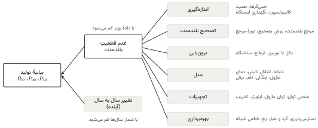
دو دام: (۱) شمارشِ دوباره: اگر تلفِ دسترسپذیری در مدل 1.9 % است، عدمِ قطعیتِ آن جزئی جداست، نه کلِ تلف؛ (۲) جا انداختن: جزئی که «کوچک به نظر میرسد» (یخ، بُرشِ دستوری) بی شاهد صفر گرفته نمیشود.
مثال 16.3 (هشت جمله، شش گروه) پرسش. هر جمله را در یک گروه بگذارید: (۱) «کالیبراسیونِ بادسنج ±1 %»؛ (۲) «دورهٔ مرجعِ بیستساله»؛ (۳) «فاصلهٔ توربین تا دکل 1.2 km»؛ (۴) «ضریبِ افتِ دنباله»؛ (۵) «رواداریِ توانِ برچسبِ ماژول»؛ (۶) «ضمانتِ دسترسپذیری»؛ (۷) «سالِ پربادِ ۲۰۱۸»؛ (۸) «مدلِ دمای سلول».
پاسخ. (۱) اندازهگیری؛ (۲) تصحیحِ بلندمدت؛ (۳) برونیابی؛ (۴) مدل؛ (۵) تجهیزات؛ (۶) بهرهبرداری؛ (۷) آینده (تغییرِ سال به سال)؛ (۸) مدل.
تفسیر. گروه مهم است چون کاهندهٔ هر گروه فرق دارد: اندازهگیری با نگهداری و کالیبراسیون، تصحیحِ بلندمدت با دادهٔ طولانیتر و مرجعِ بهتر، برونیابی با دکل یا لیدارِ دیگر، مدل با اعتبارسنجی، تجهیزات با آزمون، و بهرهبرداری با قرارداد. وارسی: هر جمله فقط در یک گروه است (درست).
- شش گروه و کاهندهٔ هر کدام را بنویسید.
- شمارشِ دوباره در بودجه یعنی چه؟
- چرا جزءِ «کوچک» بی شاهد صفر گرفته نمیشود؟
16.2.4 بودجهٔ بادی
ایده. بودجهٔ بادی از فصلهای ۱۳ و ۱۴ میآید و چند جزءِ مدل و تجهیزات و بهرهبرداری به آن افزوده میشود. جزءهای تندی با نسبتِ حساسیت (بخش 16.2.6) به انرژی تبدیل میشوند: \(u_E = c_E\, u_v\). همهٔ عددها انحرافِ معیارِ نسبی از انرژیِ بادی در ولتاژِ متوسطاند (193.14 GWh، مدلِ 15.1). جزءهایی که از فصلهای پیشین نیامدهاند آموزشیاند (A-277).
N, LN = "normal", "lognormal"
WIND = [
Part("anemometer calibration, mounting", "measurement",
SENS * math.hypot(0.010, 0.010), N, "ch 13, A-254"),
Part("long-term correction and period", "long-term",
SENS * math.hypot(0.020, 0.035 / math.sqrt(20)), N, "ch 13, A-254"),
Part("cross-prediction to the turbines", "extrapolation",
SENS * 0.0135, N, "ch 14, A-265"),
Part("wake model", "model", 0.010, N, "A-277"),
Part("hub density", "model", 0.003, N, "A-277"),
Part("power curve", "equipment", 0.020, N, "A-277"),
Part("availability (energy-based)", "operation", 0.010, N, "A-277"),
Part("icing and environmental stops", "operation", 0.005, N, "A-277"),
]
PV = [
Part("irradiance sensor, maintenance", "measurement",
math.hypot(0.020, 0.010), N, "ch 12, A-245"),
Part("long-term correction and period", "long-term",
math.hypot(0.015, 0.006), N, "ch 12, A-245"),
Part("transposition model", "model", 0.010, N, "A-278"),
Part("PV model (temperature, angle, light)", "model", 0.015, N, "A-278"),
Part("module power (flash-test sample)", "equipment", 0.010, N,
"A-278"),
Part("inverter efficiency", "equipment", 0.003, N, "A-278"),
Part("degradation, first year", "equipment", 0.003, N, "A-278"),
Part("soiling and cleaning", "operation", 0.005, N, "A-278"),
Part("availability", "operation", 0.005, N, "A-278"),
]
PLANT = [
Part("electrical losses", "model", 0.003, N, "A-278"),
Part("grid outages, ordered curtailment", "operation", 0.003, LN,
"A-278"),
]
R_WIND_PV = 0.0 # long-term parts (A-279)wind (193.14 GWh at MV), one sigma:
anemometer calibration, mounting 2.57 % share 19.3 %
long-term correction and period 3.91 % share 44.6 %
cross-prediction to the turbines 2.46 % share 17.6 %
wake model 1.00 % share 2.9 %
hub density 0.30 % share 0.3 %
power curve 2.00 % share 11.7 %
availability (energy-based) 1.00 % share 2.9 %
icing and environmental stops 0.50 % share 0.7 %
combined 5.85 % = 11.31 GWh; fully correlated 13.74 %
PV (108.36 GWh at MV), one sigma:
irradiance sensor, maintenance 2.24 % share 39.9 %
long-term correction and period 1.62 % share 20.8 %
transposition model 1.00 % share 8.0 %
PV model (temperature, angle, light) 1.50 % share 17.9 %
module power (flash-test sample) 1.00 % share 8.0 %
inverter efficiency 0.30 % share 0.7 %
degradation, first year 0.30 % share 0.7 %
soiling and cleaning 0.50 % share 2.0 %
availability 0.50 % share 2.0 %
combined 3.54 % = 3.84 GWh; fully correlated 8.95 %مثال 16.4 (پنج و هشت دهم درصد، نزدیکِ نیمش از تصحیحِ بلندمدت) پرسش. عدمِ قطعیتِ بلندمدتِ انرژیِ بادی را از جزءها بسازید؛ سهمِ هر جزء از واریانس و مقایسه با جمعِ خطی را بنویسید.
پاسخ. خروجیِ بالا (نیمهٔ بادی): ترکیب 5.85 %، یعنی 11.31 GWh؛ بزرگترین سهمها: تصحیحِ بلندمدت 44.6 %، اندازهگیری 19.3 %، پیشبینیِ متقابل 17.6 % و منحنیِ توان 11.7 %؛ اگر همه کاملاً همبسته بودند 13.74 %.
تفسیر. ریشهٔ مجموعِ مربعات (بخش 16.3.2) فقط وقتی درست است که جزءها مستقل باشند؛ جمعِ خطی حدِ بالای «همه با هم بد» است و بیش از دو برابر میشود. سه جزءِ اول همه از بادند و با یک دکل و یک مرجع ساخته شدهاند: دادهٔ بهتر، بزرگترین کاهنده است (بخش 16.5.4). وارسی: \(1.82 \times \sqrt{0.020^2 + 0.0078^2} = 3.91\ \%\) برای تصحیحِ بلندمدت.
- چرا جزءهای تندی در نسبتِ حساسیت ضرب میشوند؟
- چرا جمعِ خطی حدِ بالاست؟
- کدام جزءها از فصلهای پیشین آمدهاند و کدام آموزشیاند؟
16.2.5 بودجهٔ خورشیدی
ایده. بودجهٔ خورشیدی از بودجهٔ تابشِ فصلِ ۱۲ (2.8 % برای تابشِ افقی، A-245) شروع میشود و جزءهای تبدیل به آن افزوده میشوند: انتقالِ تابش به صفحه، مدلِ ماژول (دما، زاویه، نورِ کم)، توانِ ماژول (نمونهٔ آزمونِ فلش، فصلِ ۴۱)، اینورتر، تخریب، گرد و غبار و دسترسپذیری (A-278). نسبتِ حساسیتِ انرژیِ خورشیدی به تابش تقریباً یک است، پس جزءهای تابش مستقیم به انرژی میروند.
مثال 16.5 (سه و نیم درصد، چهل درصدش از حسگر) پرسش. عدمِ قطعیتِ بلندمدتِ انرژیِ خورشیدی و سهمِ بزرگترین جزءها را از خروجیِ بخش 16.2.4 (نیمهٔ خورشیدی) بنویسید و با بودجهٔ تابشِ فصلِ ۱۲ مقایسه کنید.
پاسخ. ترکیب 3.54 %، یعنی 3.84 GWh؛ حسگر و نگهداری 39.9 %، تصحیحِ بلندمدت 20.8 %، مدلِ ماژول 17.9 %.
تفسیر. خورشیدی نسبی کمتر از باد نامطمئن است (3.5 در برابرِ 5.9 %) و مطلق خیلی کمتر (3.8 در برابرِ 11.3 GWh)، چون انرژیاش هم کمتر است. سهمِ بزرگِ حسگر میگوید نگهداریِ ایستگاه (تمیز کردن، کالیبراسیونِ دورهای) ارزانترین راهِ کاهش است. بودجهٔ تابش (2.8 %) کمتر از بودجهٔ انرژی است: تبدیل جزءهای خودش را میافزاید. وارسی (درست):
\[ \sqrt{2.24^2 + 1.62^2 + 1.0^2 + 1.5^2 + 1.0^2 + 0.3^2 + 0.3^2 + 0.5^2 + 0.5^2} = 3.54\ \% \]
- چرا نسبتِ حساسیتِ خورشیدی به تابش تقریباً یک است؟
- توانِ ماژول در کدام گروه است و شاهدش از کجا میآید؟
- چرا بودجهٔ انرژی بزرگتر از بودجهٔ تابش است؟
16.2.6 از تندی به انرژی: نسبتِ حساسیت
ایده. انرژیِ بادی با توانِ سومِ تندی بالا میرود، اما فقط در ناحیهٔ دوی منحنی (میانِ تندیِ آغاز و نامی). بالای تندیِ نامی، تندیِ بیشتر انرژیِ بیشتری نمیدهد. پس نسبتِ حساسیت
\[ c_E = \frac{\Delta E / E}{\Delta v / v} \tag{16.1}\]
برای هر ساختگاه و چیدمان جداگانه حساب میشود: همهٔ تندیهای ساعتی را یک درصد بالا ببرید و تغییرِ انرژی را بسنجید. برای منحنیِ مکعبیِ کامل \(c_E = 3\) است (با تقریبِ \((1.01)^3 - 1 = 3.03\ \%\)).
def sensitivity_ratio(speeds, curve_v, curve_p, step: float = 0.01) -> float:
"""Percent change of energy per percent change of every speed."""
e0 = float(np.interp(speeds, curve_v, curve_p).sum())
v1 = np.asarray(speeds) * (1 + step)
e1 = float(np.interp(v1, curve_v, curve_p).sum())
return (e1 / e0 - 1.0) / stepsensitivity of the farm energy (model 15.1 farm curve) to the
wind speed of every hour:
speed +1 %: energy +1.82 % (ratio 1.82)
speed +3 %: energy +5.41 % (ratio 1.80)
speed +5 %: energy +8.94 % (ratio 1.79)
speed -3 %: energy -5.51 % (ratio 1.84)
speed -5 %: energy -9.26 % (ratio 1.85)
the ratio is about 1.8 for the farm, less than the cube (3)
because much energy comes near and above rated power, but more
than the 1.60 of one turbine without wakes (chapter 13): wakes
take more at moderate speeds; a shortfall of speed costs a
little more than the same surplus gainsمثال 16.6 (یک و هشت دهم برای مزرعه، یک و شش دهم برای یک توربین) پرسش. نسبتِ حساسیتِ انرژیِ مزرعه را برای تغییرهای ±1، ±3 و ±5 % تندی بنویسید و با 1.60ِ فصلِ ۱۳ مقایسه کنید.
پاسخ. خروجیِ بالا: 1.82 برای +1 %، 1.80 و 1.79 برای افزایشهای بزرگتر، 1.84 و 1.85 برای کاهشها.
تفسیر. مزرعه حساستر از یک توربینِ تنهاست: دنباله در تندیهای میانه بیشتر میگیرد و منحنیِ مزرعه را تندتر میکند. بودجهٔ این فصل 1.82 را به کار میبرد؛ عددِ فصلِ ۱۳ برای یک توربین بی دنباله بود. نسبت ثابت نیست: کمبودِ تندی کمی بیشتر میکاهد تا افزایشِ هماندازه بیفزاید؛ برای عدمِ قطعیتهای چند درصدی، این ناهمسانی کوچک است. وارسی: \(2.6\ \% \times 1.82 = 4.73\ \%\) (E05) برای کلِ بودجهٔ تندیِ فصلِ ۱۳.
- چرا نسبتِ حساسیت از سه کمتر است؟
- چرا مزرعه با دنباله حساستر از یک توربین است؟
- نسبتِ حساسیت را برای ساختگاهی با بادِ ضعیفتر بزرگتر یا کوچکتر انتظار دارید؟ چرا؟
16.2.7 گروهها و شاهدها
ایده. بودجه فقط به اندازهٔ شاهدِ هر سطرش معتبر است. هر جزء یکی از این شاهدها را دارد: اندازهگیریشده (آمارِ داده)، اعلامِ سازنده (برگهٔ داده، آزمونِ نوعی)، تأییدشده (آزمونِ مستقل)، فرضی (داوریِ کارشناسی) یا در این کتاب آموزشی. ستونِ «منبع» در برنامهٔ بخش 16.2.4 همین را برای هر سطر ثبت میکند. شکل 16.2 بودجهٔ بلندمدت را بر حسبِ گروه برای دو فناوری نشان میدهد.
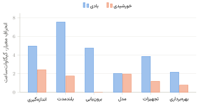
مثال 16.7 (کدام سطر را اول باید محکم کرد) پرسش. با شکل 16.2 و ستونِ منبع، بگویید کدام سطرها شاهدِ ضعیفتری دارند و کدام را اول باید محکم کرد.
پاسخ. بزرگترین گروه تصحیحِ بلندمدتِ بادی است (7.55 GWh) با شاهدِ فصلِ ۱۳ (یک سال دکل و یک مرجع)؛ سپس اندازهگیری و برونیابیِ بادی و منحنیِ توان (3.86 GWh) که فعلاً آموزشی است (A-277).
تفسیر. سطرِ بزرگ با شاهدِ آموزشی بدترین ترکیب است: منحنیِ توان باید با آزمونِ نوعی و منحنیِ تضمینشدهٔ سازنده (فصلهای ۱۱ و ۳۹) جایگزین شود. سطرِ کوچک با شاهدِ ضعیف (یخ) ارزشِ کارِ کمتری دارد. قاعده: اول سطرهایی که هم بزرگاند و هم شاهدِ ضعیف دارند. وارسی: \(0.0391 \times 193.14 = 7.55\ \text{GWh}\) (درست).
- پنج نوعِ شاهدِ یک سطرِ بودجه را نام ببرید.
- چرا سطرِ بزرگ با شاهدِ آموزشی بدترین ترکیب است؟
- شاهدِ منحنیِ توان در پروژهٔ واقعی از کجا میآید؟
16.2.8 تصحیحِ بلندمدت: طولِ داده و همبستگی
ایده. بزرگترین جزءِ بلندمدتِ بادی، تصحیحِ بلندمدت است (اندازهگیری، همبستگی و پیشبینی، فصلِ ۱۳). دو چیز آن را تعیین میکنند: طولِ دورهٔ همزمان (چند ماه دکل و مرجع با هم) و همبستگیِ دکل و مرجع. یک رابطهٔ آموزشی (A-282): خطای رگرسیون با انحرافِ معیارِ ماهانهٔ پسماند، \(s\sqrt{1 - r^2}\)، و تعدادِ ماهها \(m\) کم میشود، و نماینده بودنِ مرجعِ بیستساله یک حدِ پایین میگذارد:
\[ u_\text{MCP} = \sqrt{\left(\frac{s\sqrt{1 - r^2}}{\sqrt{m}}\right)^2 + \left(\frac{u_\text{iav}}{\sqrt{N_\text{ref}}}\right)^2} \tag{16.2}\]
این رابطه ماهها را مستقل میگیرد؛ همبستگیِ ماههای پیاپی و فصلی بودن، خطای واقعی را بیشتر میکنند.
def u_mcp(months: int, r: float, sd_month: float = 0.10,
years_ref: int = 20, sd_year: float = 0.035) -> float:
"""Teaching relation (A-282): uncertainty of the long-term mean speed
from a regression on `months` concurrent months with correlation r
(residual sd_month sqrt(1 - r^2), months taken as independent) plus
the representativeness of a reference of `years_ref` years."""
reg = sd_month * math.sqrt(1 - r * r) / math.sqrt(months)
return math.hypot(reg, sd_year / math.sqrt(years_ref))uncertainty of the long-term mean wind speed by MCP (teaching
relation A-282; monthly sd 10 %, 20-year reference at 3.5 %):
months r 0.70 r 0.80 r 0.90 r 0.95
6 3.02 % 2.57 % 1.94 % 1.50 %
12 2.21 % 1.90 % 1.48 % 1.19 %
18 1.86 % 1.62 % 1.29 % 1.07 %
24 1.65 % 1.45 % 1.18 % 1.01 %
36 1.42 % 1.27 % 1.07 % 0.94 %
a longer concurrent period and a better-correlated reference
both help, and both stop at the reference's own limit (0.8 %);
12 months at r 0.7 to 0.8 give the 2.15 % (MCP and period) of
chapter 13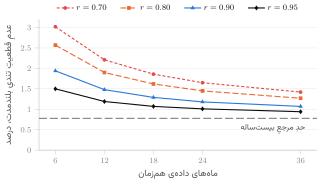
مثال 16.8 (دوازده ماه بیشتر یا مرجعِ بهتر؟) پرسش. با شکل 16.3، برای دکلی با دوازده ماه داده و همبستگیِ 0.80، دو راه را مقایسه کنید: دوازده ماهِ دیگر اندازهگیری، یا مرجعی با همبستگیِ 0.90.
پاسخ. خروجیِ بالا: حالا 1.90 %؛ با بیستوچهار ماه 1.45 %؛ با مرجعِ بهتر 1.48 %؛ هر دو با هم 1.18 %.
تفسیر. دو راه تقریباً همارزند، اما مرجعِ بهتر فوری است (اگر وجود داشته باشد) و سالِ دیگر یک سال تأخیر میآورد. هر دو به حدِ 0.8 %ِ مرجعِ بیستساله میرسند؛ برای کمتر از آن، دورهٔ مرجعِ طولانیتر یا مرجعِ همگنتر لازم است. عددِ 2.15 %ِ فصلِ ۱۳ با یک سال دکل و همبستگیِ میانِ 0.7 و 0.8 جور است. وارسی: \(0.10 \times \sqrt{1 - 0.64} / \sqrt{12} = 1.73\ \%\) و \(\sqrt{1.73^2 + 0.78^2} = 1.90\ \%\).
- دو عاملِ تعیینکنندهٔ عدمِ قطعیتِ تصحیحِ بلندمدت را بنویسید.
- چرا هر دو راه به حدی میرسند؟
- چرا فرضِ استقلالِ ماهها خوشبینانه است؟
16.2.9 آیندهٔ همانندِ گذشته؟ روندِ اقلیمی
ایده. تصحیحِ بلندمدت فرض میکند بیست سالِ گذشته نمایندهٔ پانزده سالِ آینده است. اگر باد یا تابش روندِ آرامی داشته باشد، این فرض خطا دارد. روندِ آموزشیِ −0.5 % تندی در دهه (A-282) را در نظر بگیرید: میانهٔ مرجع ده سال پیش و میانهٔ دورهٔ وام هفت و نیم سال بعد است.
a slow change of the wind (teaching trend -0.5 % of speed a decade):
reference centre to loan centre: 17.5 years; speed -0.88 %
wind energy -1.59 % = -3.08 GWh a year at MV
as a one-sigma part it would be 1.59 %, beside the 5.85 % of the wind
a trend is not noise: if it is believed, the P50 moves; if it
is only possible, it becomes a scenario or a budget part, and
the statement says which (and on what evidence)مثال 16.9 (سه گیگاواتساعت از یک فرض) پرسش. اثرِ روندِ آموزشی را بر انرژیِ بادیِ دورهٔ وام بنویسید و بگویید در بیانیه کجا میآید.
پاسخ. خروجیِ بالا: هفده و نیم سال میانِ دو میانه، تندی −0.88 %، انرژی −1.59 %، یعنی −3.08 GWh در سال.
تفسیر. روند نوفه نیست: اگر شاهد قوی است (دادهٔ بلندمدتِ همگن)، P50 جابهجا میشود؛ اگر فقط ممکن است، یا جزئی از بودجه میشود (اندازهاش همردیفِ اندازهگیریِ بادی) یا یک سناریوی نامدار. شاهدِ روند باید از سریهای همگن باشد؛ تغییرِ ابزار یا محیطِ ایستگاهِ مرجع روندِ دروغین میسازد (فصلهای ۱۲ و ۱۳). وارسی: \(-0.88 \times 1.82 = -1.60\ \%\).
- چرا روند با نوفه فرق دارد؟
- سه راهِ آوردنِ روند در بیانیه را بنویسید.
- چه چیزی روندِ دروغین میسازد؟
16.2.10 تخریب در طولِ عمر
ایده. نرخِ تخریبِ ماژول (0.5 % در سال، فصلِ ۱۵) خودش نامطمئن است؛ آموزشی ±0.2 % در سال (A-282). چون یک نیروگاه یک نرخ دارد، خطای نرخ سال به سال جمع میشود (کاملاً همبسته) و عدمِ قطعیتِ ناشی از آن با شمارِ سالها خطی بزرگ میشود.
PV energy and its uncertainty from the degradation rate
(0.5 +/- 0.2 % a year, one rate for the whole life):
year PV GWh at MV sigma from rate PV sigma all parts
1 108.36 0.22 GWh 3.84 GWh
5 106.18 1.09 GWh 3.91 GWh
10 103.46 2.18 GWh 4.26 GWh
15 100.73 3.27 GWh 4.84 GWh
20 98.01 4.36 GWh 5.57 GWh
25 95.29 5.45 GWh 6.41 GWh
the rate's uncertainty grows with every year: near year 15 it
equals all other PV parts together and then exceeds them;
long-term module data (chapter 41, field records) shrink itمثال 16.10 (در سالِ بیستم بزرگتر از همهٔ بقیه) پرسش. عدمِ قطعیتِ انرژیِ خورشیدی از نرخِ تخریب و از همهٔ جزءها را برای سالهای ۱ تا ۲۵ بنویسید.
پاسخ. خروجیِ بالا: از نرخ: 0.22 در سالِ اول، 2.18 در سالِ دهم، 4.36 در بیستم و 5.45 GWh در بیستوپنجم؛ همه: 3.84 تا 6.41 GWh.
تفسیر. در سالِ اول نرخِ تخریب بیاهمیت است؛ نزدیکِ سالِ پانزدهم با همهٔ جزءهای دیگرِ خورشیدی برابر و سپس بزرگتر میشود. پس بیانیهٔ سالِ اول و سریِ طولِ عمر بودجهٔ متفاوت دارند؛ مدلِ مالیِ چندساله این رشد را میگیرد. شاهدِ نرخ از آزمونهای پایداری و دادهٔ میدانیِ ماژولهای مشابه میآید (فصلِ ۴۱). وارسی: \(0.002 \times 20 \times 108.36 / 0.995 = 4.36\).
- چرا خطای نرخِ تخریب سال به سال جمع میشود؟
- چرا بیانیهٔ سالِ اول و سریِ طولِ عمر بودجهٔ متفاوت دارند؟
- شاهدِ نرخِ تخریب از کجا میآید؟
16.2.11 دسترسپذیری: توزیعِ یکطرفه
ایده. بیشترِ سالها دسترسپذیری نزدیکِ بهترین است؛ گاهی یک خرابیِ بزرگ (گیربکس، پره، ترانسفورماتور) یک توربین را ماهها میخواباند. پس توزیع یکطرفه است و نرمال نیست. مدلِ آموزشی (A-282): توقفهای کوچک حدودِ 1 % زمان، و برای هر توربین در هر سال احتمالِ 4 % یک توقفِ حدودِ شصتروزه؛ صد هزار سالِ شبیهسازیشده.
annual availability with rare major failures (A-282):
mean 98.34 %, median 98.82 %, sd 1.01 %
P90 97.06 %, P99 95.03 %
normal with the same mean and sd: P90 97.05 %, P99 95.99 %
years with no major failure: 61 %
the distribution is one-sided: most years are a little better
than the mean, a few much worse; a normal part misplaces the
tail, and a long repair (spares, cranes, chapter 51) is the
real driver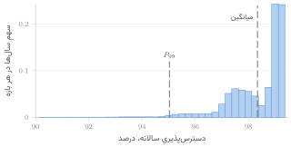
مثال 16.11 (میانه بالای میانگین، دم بلند) پرسش. میانگین، میانه، P90 و P99ِ دسترسپذیری را بنویسید و با توزیعِ نرمالِ هممیانگین و همانحرافِ معیار مقایسه کنید.
پاسخ. خروجیِ بالا و شکل 16.4: میانگین 98.34 %، میانه 98.82 %؛ P90 97.06 در برابرِ نرمالِ 97.05 %؛ P99 95.03 در برابرِ 95.99 %؛ 61 % سالها بی خرابیِ بزرگ.
تفسیر. در P90 نرمال تقریباً درست است؛ در P99 یک درصد خوشبینانه است، و P99 همان حالتی است که در این فصل بدهیِ چیدمانِ یالی را میسازد (مثال 16.44). کاهندهٔ اصلی مدتِ تعمیر است: قطعهٔ یدکی، دسترسی به جرثقیل و قراردادِ نگهداری (فصلِ ۵۱). وارسی: احتمالِ بی خرابیِ بزرگ \(0.96^{12} = 0.61\).
- چرا توزیعِ دسترسپذیری یکطرفه است؟
- چرا میانه از میانگین بیشتر است؟
- کدام اقدامِ بهرهبرداری دمِ توزیع را کوتاه میکند؟
16.3 ب. ترکیب و وابستگی
16.3.1 توزیعها: نرمال، لگنرمال، یکنواخت، مثلثی
ایده. هر جزء یک توزیع دارد، نه فقط یک انحرافِ معیار. چهار شکلِ رایج (فصلِ ۳):
- نرمال: وقتی جزء از جمعِ اثرهای کوچکِ بسیار میآید (خطای اندازهگیری، تصحیحِ بلندمدت).
- لگنرمال: وقتی جزء ضربی و مثبت است یا دمِ یکطرفه دارد (تلفهایی که نمیتوانند منفی شوند، مانندِ قطعیِ شبکه).
- یکنواخت: وقتی فقط حدها معلوماند (رواداریِ برگهٔ داده، «بین −2 و +2 %»)؛ انحرافِ معیار \(a/\sqrt{3}\) برای نیمپهنای \(a\).
- مثلثی متقارن: حدها معلوم و مرکز محتملتر؛ انحرافِ معیار \(a/\sqrt{6}\).
پرسشِ عملی: آیا شکل در نتیجه مهم است؟ برای پاسخ، هر چهار شکل با انحرافِ معیارِ 5 % و یک میلیون نمونه:
def sample(kind: str, u: float, n: int, rng) -> np.ndarray:
"""Multiplicative factors with mean 1 and standard deviation u:
normal, lognormal, uniform (half-width u sqrt 3) or symmetric
triangular (half-width u sqrt 6)."""
if kind == "normal":
return 1.0 + u * rng.standard_normal(n)
if kind == "lognormal":
s = math.sqrt(math.log(1.0 + u * u))
return np.exp(-0.5 * s * s + s * rng.standard_normal(n))
if kind == "uniform":
a = u * math.sqrt(3.0)
return 1.0 + rng.uniform(-a, a, n)
if kind == "triangular":
a = u * math.sqrt(6.0)
return 1.0 + rng.triangular(-a, 0.0, a, n)
raise ValueError(kind)
def exceedance(values, p: float = 0.90) -> float:
"""Value exceeded by a share p of the samples (P90: 10th percentile)."""
return float(np.quantile(np.asarray(values, float), 1.0 - p))P90 and P99 factors for a 5 % spread, by distribution shape
(one million samples):
shape P90 factor P99 factor
normal 0.9360 0.8836
lognormal 0.9368 0.8892
uniform 0.9308 0.9151
triangular 0.9323 0.8949
the P90 hardly depends on the shape; the P99 does: the tail is
where the assumption of a distribution mattersمثال 16.12 (شکل در P90 کم، در P99 زیاد) پرسش. ضریبِ P90 و P99 را برای چهار شکل با انحرافِ معیارِ یکسان مقایسه کنید.
پاسخ. خروجیِ بالا: P90 از 0.9308 (یکنواخت) تا 0.9368 (لگنرمال)، یعنی نیم درصد؛ P99 از 0.8836 (نرمال) تا 0.9151 (یکنواخت)، یعنی سه درصد.
تفسیر. برای P90 شکل کماهمیت است؛ برای P99 مهم، چون دم جایی است که شکلها از هم جدا میشوند. یکنواخت دم ندارد و P99ِ خوشبینانه میدهد؛ اگر واقعاً دم هست (مثلاً سالِ استثنایی)، یکنواخت فرض کردن خطرناک است. پس هرچه احتمالِ فزونی بالاتر، شاهدِ شکل مهمتر. وارسی: نرمال \(1 - 1.2816 \times 0.05 = 0.9359\) (درست).
- برای هر یک از چهار شکل، یک جزء از بودجهٔ نیروگاهِ P مثال بزنید.
- انحرافِ معیارِ توزیعِ یکنواخت با نیمپهنای 2 % چیست (P20)؟
- چرا شکل در P99 مهمتر از P90 است؟
16.3.2 ریشهٔ مجموعِ مربعات
ایده. برای جزءهای مستقل که هر کدام اثرِ کوچک و تقریباً خطی دارند، واریانسها جمع میشوند:
\[ u_\text{c} = \sqrt{u_1^2 + u_2^2 + \dots + u_n^2} \tag{16.3}\]
این همان قاعدهٔ فصلِ ۲ با ضریبهای حساسیتِ یک است (همهٔ جزءها نسبیِ همان انرژیاند). نتیجه همیشه از بزرگترین جزء بزرگتر و از جمعِ خطی کوچکتر است. سهمِ هر جزء از واریانس، \(u_i^2 / u_\text{c}^2\)، میگوید کدام جزء نتیجه را میسازد.
def combine(u, r=None) -> float:
"""Combined uncertainty of a sum of components u (same units) with
correlation matrix r (identity if None): sqrt(u' R u)."""
u = np.asarray(u, float)
if r is None:
return float(math.sqrt(float(u @ u)))
r = np.asarray(r, float)
return float(math.sqrt(float(u @ r @ u)))
def shares(u, r=None) -> np.ndarray:
"""Share of the variance of each component (independent: u_i^2 /
sum; correlated: u_i (R u)_i / u' R u, which still sums to one)."""
u = np.asarray(u, float)
r = np.eye(len(u)) if r is None else np.asarray(r, float)
return u * (r @ u) / float(u @ r @ u)
def n_year(u_long: float, u_iav: float, n: int) -> float:
"""Uncertainty of the mean of n future years: the long-term part
stays, the year-to-year part falls with the square root of n."""
return math.sqrt(u_long ** 2 + u_iav ** 2 / n)مثال 16.13 (سه و چهار میشود پنج) پرسش. دو جزءِ مستقلِ 3 % و 4 %: ترکیب، سهمها، و ترکیب اگر کاملاً همبسته باشند.
پاسخ. E03 و E07: \(\sqrt{9 + 16} = 5\ \%\)؛ سهمها 0.36 و 0.64؛ کاملاً همبسته 7 %.
تفسیر. جزءِ 3 %ی با اینکه سهچهارمِ دیگری است، فقط 36 % از واریانس را دارد: مربع کردن، بزرگها را بزرگتر میکند. پس کم کردنِ جزءهای کوچک کماثر است؛ کار باید روی بزرگترینها باشد (بخش 16.5.3). وارسی: \(9/25 = 0.36\).
- ترکیبِ 2، 3 و 6 % را حساب کنید (P04).
- چرا ترکیب از جمعِ خطی کوچکتر است؟
- سهمِ جزءِ 6 % در پرسشِ ۱ چیست؟
16.3.3 همبستگی
ایده. اگر دو جزء با هم بالا و پایین بروند (یک مرجعِ بلندمدت برای هر دو، یک مدلساز با عادتهای یکسان، یک ایستگاه برای تابش و دما)، واریانسها ساده جمع نمیشوند:
\[ u_\text{c}^2 = \sum_i u_i^2 + 2 \sum_{i<j} r_{ij}\, u_i\, u_j = \mathbf{u}^\mathsf{T} \mathbf{R}\, \mathbf{u} \tag{16.4}\]
که \(\mathbf{R}\) ماتریسِ همبستگی است. \(r = 0\) ریشهٔ مجموعِ مربعات است، \(r = 1\) جمعِ خطی، و \(r < 0\) کمتر از هر دو. برای نیروگاهِ P، همبستگیِ خطاهای بلندمدتِ باد و خورشیدی فرض شده صفر است (A-279: دکل و ایستگاهِ جدا، مرجعهای جدا)؛ این خودش یک فرض است که شاهد میخواهد.
hybrid long-term sigma against the correlation of the wind and
PV long-term errors (wind 11.31, PV 3.84 GWh):
r sigma GWh P90 (long-term, at MV) GWh
-0.50 9.96 288.73
-0.25 11.00 287.40
+0.00 11.94 286.19
+0.25 12.82 285.07
+0.50 13.64 284.02
+0.75 14.41 283.03
+1.00 15.15 282.08
shared inputs (one long-term reference used for both, one
modeller's habits) make r positive; treat r as an assumption
with its own evidence (A-279 sets 0)مثال 16.14 (شش گیگاواتساعت از یک فرض) پرسش. انحرافِ معیارِ بلندمدتِ هیبرید و P90ِ بلندمدت را برای همبستگیهای −0.5 تا +1 بنویسید.
پاسخ. خروجیِ بالا: از 9.96 تا 15.15 GWh؛ P90ِ بلندمدت در ولتاژِ متوسط از 288.73 تا 282.08 GWh.
تفسیر. فرضِ همبستگی P90 را تا 6.7 GWh جابهجا میکند؛ بیش از اثرِ هر جزءِ تکیِ خورشیدی. اگر خورشیدی و باد هر دو با یک مرجعِ بازتحلیل تصحیح شوند، همبستگیِ مثبت محتمل است و فرضِ صفر خوشبینانه میشود. در گزارش، \(r\) با شاهدش نوشته میشود و یک حساسیت با \(r = 0.5\) همراهش میآید. وارسی: \(r = 1\): \(11.31 + 3.84 = 15.15\) (جمعِ خطی، درست).
- معادلهٔ 16.4 را برای دو جزء با \(r = 0.3\) و \(r = -0.3\) و هر دو 5 % حساب کنید (P06، P07).
- سه منبعِ همبستگیِ مثبت میانِ خطاهای باد و خورشیدی را نام ببرید.
- چرا همبستگیِ منفی عدمِ قطعیتِ مجموع را کم میکند؟
16.3.4 P90ِ هیبرید جمعِ P90ها نیست
ایده. یک خطای رایج: P90ِ باد و P90ِ خورشیدی را جمع کنند و «P90ِ هیبرید» بنامند. اما احتمالِ اینکه هر دو در یک سال در بدترین دهک باشند، بسیار کمتر از 10 % است (مگر کاملاً همبسته باشند). P90ِ درست از توزیعِ مجموع میآید، با معادلهٔ 16.4 برای جزءهای بلندمدت و همبستگیِ سال به سالِ +0.12 (فصلِ ۱۵).
P90 of the hybrid against the sum of the P90s (one year, at MV):
wind P50 193.14 sigma 14.28 P90 174.84 GWh
PV P50 108.36 sigma 4.81 P90 102.20 GWh
sum of the two P90s 277.04 GWh
hybrid P50 301.49 sigma 15.26 P90 281.93 GWh
the hybrid P90 is 4.90 GWh higher than the sum:
a P90 is not additive, because both sources are unlikely to be
at their P90 in the same year; adding P90s double-counts the
downsideمثال 16.15 (پنج گیگاواتساعت که جمع گم میکند) پرسش. P90ِ یکسالهٔ باد، خورشیدی و هیبرید را در ولتاژِ متوسط بنویسید و با جمعِ دو P90 مقایسه کنید.
پاسخ. خروجیِ بالا: باد 174.84، خورشیدی 102.20، جمع 277.04؛ هیبرید 281.93 GWh؛ 4.90 GWh بیشتر.
تفسیر. جمعِ P90ها پایین را دو بار میشمارد. این یکی از سودهای هیبرید است: دو منبع که با هم بد نمیشوند، P90ِ بالاتری از جمعِ دو نیروگاهِ جدا دارند (مثال 16.49). همین قاعده برای P99، برای سبدی از نیروگاهها (بخش 16.6.6) و برای جمعِ ماهها برقرار است. وارسی: \(301.49 - 1.2816 \times 15.26 = 281.93\) (درست).
- چرا P90ها جمعپذیر نیستند؟
- در چه حالتی جمعِ P90ها درست است؟
- P50ها جمعپذیرند؟ (برای توزیعِ متقارن آری؛ چرا؟)
16.3.5 مونتکارلو
ایده. وقتی مدل غیرخطی است (حدِ صادرات، تلفِ مربعی، بُرش)، یا شکلها نرمال نیستند، یا همبستگیها پیچیدهاند، مونتکارلو (فصلِ ۳؛ راهنمای JCGM 101:2008) مستقیم توزیع را میسازد: برای هر نمونه، هر جزء را از توزیعش بکش، مدل را اجرا کن، انرژی را نگه دار؛ از هزاران نمونه، صدکها را بخوان. اینجا هر جزء ضریبی روی سریِ ساعتیِ فناوریِ خودش است، تغییرِ سال به سال یک جفتِ همبسته است که روی \(n\) سال میانگین گرفته میشود، و هر نمونه انتهای مدلِ 15.1 (بخش 15.4.8) را اجرا میکند:
def draw_factors(parts, n: int, rng) -> np.ndarray:
"""Product of the parts' factors, one value per draw."""
f = np.ones(n)
for p in parts:
f *= yr.sample(p.kind, p.u, n, rng)
return f
def iav_pair(n: int, years: int, rng):
"""Mean of `years` correlated wind/PV year factors, per draw."""
b = src.base()
r = b["r_iav"]
z1 = rng.standard_normal((n, years))
z2 = r * z1 + math.sqrt(1 - r * r) * rng.standard_normal((n, years))
fw = 1 + b["iav_w"] * z1.mean(axis=1)
fp = 1 + b["iav_p"] * z2.mean(axis=1)
return fw, fp
def net_draws(n: int, years: int = 1, seed: int = 160, pv_scale=1.0,
parts=None):
"""Net energy at the POC (GWh) for n draws."""
rng = np.random.default_rng(seed)
wind, pv, plant = parts or (src.WIND, src.PV, src.PLANT)
fw = draw_factors(wind, n, rng)
fp = draw_factors(pv, n, rng)
fpl = draw_factors(plant, n, rng)
iw, ip = iav_pair(n, years, rng)
r = src.base()["r"]
cfg = s15.ModelConfig()
out = np.empty(n)
for k in range(n):
_, net = ym.plant_end(r["w_av"] * fw[k] * iw[k],
r["pv_av"] * pv_scale * fp[k] * ip[k],
cfg, r["outage"])
out[k] = net.sum() / 1e3 * fpl[k]
return out- سه دلیل برای مونتکارلو بهجای ریشهٔ مجموعِ مربعات بنویسید.
- چرا هر نمونه انتهای کاملِ مدل را اجرا میکند؟
- تغییرِ سال به سالِ \(n\) ساله در برنامه چگونه ساخته میشود؟
16.3.6 همگرایی: چند نمونه کافی است؟
ایده. P90ِ مونتکارلو خودش برآورد است و با شمارِ نمونهها \(N\) نوسان دارد. برای صدکِ \(p\) از توزیعِ نرمال، خطای استانداردِ برآورد حدودِ
\[ \frac{\sqrt{p\,(1-p)}}{\varphi(z_p)\,\sqrt{N}}\, \sigma \approx 1.71\, \frac{\sigma}{\sqrt{N}} \qquad (p = 0.1) \tag{16.5}\]
است (\(\varphi\) چگالیِ نرمالِ استاندارد). آزمونِ تجربی: دویست بار تکرار برای هر \(N\).
def convergence(draw, sizes, repeats: int, seed: int, p: float = 0.90):
"""Mean and spread of the sample P-value for each sample size:
draw(n, rng) returns n samples."""
rng = np.random.default_rng(seed)
out = []
for n in sizes:
est = [exceedance(draw(n, rng), p) for _ in range(repeats)]
out.append((n, float(np.mean(est)), float(np.std(est, ddof=1))))
return outMonte Carlo P90 of a normal net energy (P50 295.14, sigma 14.99 GWh),
200 repeats per sample size:
draws mean P90 spread of the P90 estimate
100 276.29 2.670 GWh
1,000 275.98 0.735 GWh
10,000 275.90 0.251 GWh
100,000 275.93 0.078 GWh
exact P90 275.93 GWh; the spread falls with the square root
of the draws: 10,000 draws give the P90 to about 0.2 GWh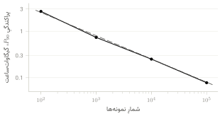
مثال 16.16 (ده هزار نمونه برای دو دهم گیگاواتساعت) پرسش. پراکندگیِ برآوردِ P90 را برای ۱۰۰ تا ۱۰۰٬۰۰۰ نمونه بنویسید و با معادلهٔ 16.5 مقایسه کنید.
پاسخ. خروجیِ بالا و شکل 16.5: 2.67، 0.74، 0.25 و 0.08 GWh؛ فرمول برای ده هزار: \(1.71 \times 14.99 / 100 = 0.26\ \text{GWh}\) (E08).
تفسیر. ده برابر دقت، صد برابر نمونه میخواهد. برای P90، ده هزار نمونه کافی است؛ برای P99، که در دم است، خطا چند برابر است و نمونهٔ بیشتر یا روشهای کاهشِ واریانس (نمونهگیریِ لایهای، فصلِ ۳) لازم است. بذرِ تصادفی ثبت میشود تا بازبین همان عدد را بسازد. وارسی: \(2.67 / 0.25 \approx 10.7\)، نزدیکِ \(\sqrt{100} = 10\).
- چند نمونه برای P90 با دقتِ 0.1 GWh لازم است (P19)؟
- چرا P99 نمونهٔ بیشتری میخواهد؟
- چرا بذرِ تصادفی در گزارش ثبت میشود؟
16.3.7 اثرهای غیرخطی
ایده. حدِ صادرات و بُرش کوژاند (بخش 15.4.13): سالهای خوب بیشتر از دست میدهند تا سالهای بد به دست میآورند. پس توزیعِ خروجی از بالا فشرده میشود و میانگین زیرِ مقدارِ قطعی میرود. برای سنجش، مونتکارلو با بلوکِ خورشیدیِ 50 و 80 MW اجرا شده است و P90ِ آن با «میانگین منهای \(1.2816\) انحرافِ معیار» مقایسه شده است.
Monte Carlo through the plant end (losses, limit) against the
linear sum, one year, 6,000 draws:
PV block deterministic MC mean MC P50 MC P90 linear P90
50 MW 295.14 294.98 294.60 276.72 276.43
80 MW 352.18 352.07 351.58 334.28 334.06
linear P90 = MC mean - 1.2816 x sd of the draws; even with the
80 MW block the limit changes the spread little here: the
differences are about the Monte Carlo noise (0.2 GWh on the
mean); the median lies below the mean (products of factors
skew to the right); a plant with heavy clipping or curtailment
is still checked this way, not assumed linearمثال 16.17 (خطی بس است، اما باید وارسی شود) پرسش. مقدارِ قطعی، میانگین، میانه و P90ِ مونتکارلو را با P90ِ خطی برای دو اندازهٔ بلوک مقایسه کنید.
پاسخ. خروجیِ بالا: 50 MW: قطعی 295.14، میانگین 294.98، میانه 294.60، P90 276.72 در برابرِ خطیِ 276.43؛ 80 MW: 334.28 در برابرِ 334.06 GWh.
تفسیر. حتی با بلوکِ 80 MW (بُرشِ 1.8 %) اختلافها هماندازهٔ نوفهٔ مونتکارلوست: برای این نیروگاه، بودجهٔ خطی کافی است. اما این نتیجهٔ وارسی است، نه فرض: نیروگاهی با بُرشِ چند درصدی یا با ذخیرهساز و قاعدهٔ کنترلِ پیچیده باید با مونتکارلو وارسی شود. میانه زیرِ میانگین است: ضربِ ضریبها توزیع را کمی به راست کج میکند (بخش 16.4.3). وارسی: نوفهٔ میانگین با شش هزار نمونه \(15/\sqrt{6000} = 0.19\ \text{GWh}\).
- چرا حدِ صادرات توزیع را از بالا فشرده میکند؟
- چرا اینجا اثرِ غیرخطی کوچک است؟
- چه نیروگاهی حتماً مونتکارلو میخواهد؟
16.3.8 سناریوها: «اگر»، نه «چقدر محتمل»
ایده. سناریو یک حالتِ نامدار است: «سالِ کمباد»، «سالِ پرگرد و غبار»، «قطعیِ طولانیِ شبکه». سناریو احتمال ندارد؛ میگوید «اگر این شود، چه میشود». وامدهنده و مالک اغلب هم مقدارهای احتمالِ فزونی و هم سناریوهای نامدار میخواهند؛ این دو جانشینِ هم نیستند.
scenarios against the P50 of 295.14 GWh (one year, teaching):
low wind year (one year -1.28 sd) 284.35 GWh (-10.79)
dusty year (soiling x 3) 292.20 GWh ( -2.94)
grid: 48 h outage + spring limit 293.85 GWh ( -1.29)
availability 95 % wind 289.27 GWh ( -5.88)
all four together (spring limit left out) 274.56 GWh
one-year P90 from the budget 275.93 GWh
a scenario has no probability: it answers 'what if', and the
lender may ask for named scenarios besides the P-valuesمثال 16.18 (چهار سناریو با هم، زیرِ P90) پرسش. چهار سناریوی آموزشی را جدا و با هم اجرا کنید و با P90ِ یکساله مقایسه کنید.
پاسخ. خروجیِ بالا: سالِ کمباد −10.79، پرگرد و غبار −2.94، شبکه −1.29، دسترسپذیریِ 95 % −5.88 GWh؛ هر چهار با هم 274.56 در برابرِ P90ِ 275.93 GWh.
تفسیر. روی هم گذاشتنِ چند سناریوی بد بهسرعت زیرِ P90 میرود، اما احتمالِ آن هیچجا معلوم نیست. اگر سناریو و P90 با هم ترکیب شوند (مثلاً «P90 بهاضافهٔ سالِ کمباد»)، همان سالِ بد دو بار شمرده میشود، چون تغییرِ سال به سال در P90 هست. سناریوها جدا گزارش میشوند (بخش 16.6.4). وارسی: سالِ کمباد (نزدیکِ 10.79):
\[ 1.2816 \times 4.51\ \% \times 193.14 \times 0.979 \approx 10.9\ \text{GWh} \]
- فرقِ سناریو و مقدارِ احتمالِ فزونی چیست؟
- چرا «P90 بهاضافهٔ سالِ کمباد» دوبارهشماری است؟
- سه سناریوی نامدار برای یک نیروگاهِ هیبریدی پیشنهاد کنید.
16.3.9 دقتِ دروغین
ایده. «P90 برابرِ 275.93 GWh» دقیق به نظر میرسد، اما خودِ انحرافِ معیار با چند جزءِ آموزشی و بیست سال داده ساخته شده است و شاید 20 % خطا داشته باشد. دقتِ گزارش باید با دقتِ دانسته جور باشد (فصلِ ۲: گرد کردن با عدمِ قطعیت).
how precise is a P90? (one year):
P50 295.14, sigma 14.99 GWh, P90 275.93 GWh
sigma itself -20 %: P90 279.77 GWh
sigma itself +20 %: P90 272.08 GWh
an uncertainty known to about a fifth moves the P90 by about
3.8 GWh; report it as about 276 GWh, not to two decimalsمثال 16.19 (نزدیک به دویست و هفتاد و شش) پرسش. اگر انحرافِ معیار ±20 % نامطمئن باشد، P90 چقدر جابهجا میشود و چگونه باید گزارش شود؟
پاسخ. خروجیِ بالا: از 272.08 تا 279.77 GWh، یعنی حدودِ ±3.8 GWh؛ گزارش: «حدودِ 276 GWh».
تفسیر. دو رقمِ اعشار در P90 اطلاعات نیست، نمایش است و اعتمادِ بیجا میسازد. در جدولهای کاری دقتِ بیشتر برای وارسیِ حساب میماند؛ در بیانیه، گیگاواتساعتِ درست و یک جمله دربارهٔ عدمِ قطعیتِ خودِ انحرافِ معیار (بخش 16.4.4). وارسی: \(1.2816 \times 14.99 \times 0.2 = 3.84\ \text{GWh}\).
- چرا دو رقمِ اعشار در P90 دقتِ دروغین است؟
- دقتِ گزارش را از چه چیزی تعیین میکنید؟
- جدولِ کاری و بیانیه در دقت چه فرقی دارند؟
16.3.11 فاصلهٔ دو مدل بهعنوانِ شاهد
ایده. جزءهای مدل در بودجه (دنباله، چگالی، انتقالِ تابش، مدلِ ماژول، تلفِ برقی) آموزشیاند. یک شاهدِ مستقل برای اندازهٔ آنها: فاصلهٔ دو مدلِ معقول. پلِ فصلِ ۱۵ (مثال 15.37) مدلِ بازبین را 5.91 GWh پایینتر از مدلِ ما یافت.
the spread of two models as evidence for the model parts:
model parts of the budget (wake, density, transposition, PV
model, electrical): sigma 2.95 GWh at MV
chapter 15 bridge, reviewer's model B against model A: 5.91 GWh (2.0 %)
that is 2.0 sigma of the model parts (or 1.4 sigma of
the difference of two independent models)
two models differing by about one to two sigma is ordinary;
a much larger gap would say the model parts are too small,
and the bridge says which part to look at firstمثال 16.21 (دو انحرافِ معیار: عادی) پرسش. انحرافِ معیارِ جزءهای مدل را حساب و با فاصلهٔ دو مدل مقایسه کنید.
پاسخ. خروجیِ بالا: 2.95 GWh؛ فاصله 5.91 GWh، یعنی دو برابر؛ و اگر هر دو مدل خطای مستقل داشته باشند، فاصلهٔ آنها انحرافِ معیارِ \(\sqrt{2}\,\sigma\) دارد: 1.4 برابر.
تفسیر. فاصلهٔ یک تا دو انحرافِ معیار عادی است: جزءهای مدل ناسازگار با شاهد نیستند. اگر فاصله پنج برابر بود، جزءها کوچک گرفته شده بودند و بودجه باید بزرگ میشد. پل میگوید از کجا شروع کنیم: آسمان و دمای سلول (مثال 15.37). وارسی: \(5.91 / (2.95 \times \sqrt{2}) = 1.42\).
- چرا فاصلهٔ دو مدل شاهدی برای جزءهای مدل است؟
- چرا انحرافِ معیارِ فاصلهٔ دو مدل \(\sqrt{2}\) برابر است؟
- فاصلهٔ بسیار بزرگ چه میگوید؟
16.3.12 جزءِ مشترک و جزءِ هر واحد
ایده. یک جزء میتواند دو بخش داشته باشد: سیستماتیک (مشترک در همهٔ واحدها: یک نوع توربین، یک آزمونِ منحنیِ توان، یک کالیبراسیون) و تصادفیِ هر واحد (تفاوتِ ساخت، نصب، نقطهٔ کار). بخشِ دوم در مزرعه با \(\sqrt{n}\) کم میشود، بخشِ اول نه:
\[ u_\text{farm} = \sqrt{u_\text{sys}^2 + \frac{u_\text{unit}^2}{n}} \tag{16.6}\]
parts shared by all turbines against parts of each unit
(power curve, teaching: 2.0 % systematic, 3.0 % per unit):
turbines farm sigma %
1 3.61
3 2.65
12 2.18
50 2.04
the per-unit part averages out over many turbines, the
systematic part never does: the budget lists the farm-level
(systematic) sigma, not one turbine'sمثال 16.22 (دوازده توربین، تقریباً فقط بخشِ مشترک) پرسش. با بخشِ سیستماتیکِ 2.0 % و بخشِ هر واحدِ 3.0 % (A-283)، عدمِ قطعیتِ منحنیِ توانِ مزرعه را برای ۱، ۳، ۱۲ و ۵۰ توربین بنویسید.
پاسخ. خروجیِ بالا: 3.61، 2.65، 2.18 و 2.04 %.
تفسیر. با دوازده توربین، بخشِ هر واحد تقریباً میانگین گرفته شده است و فقط بخشِ مشترک میماند. پس آزمونِ منحنیِ توانِ یک توربین در ساختگاه (فصلِ ۴۹) هم بخشِ مشترک را کم میکند و هم ارزشِ زیادی دارد؛ و بودجه عدمِ قطعیتِ مزرعه را مینویسد، نه یک توربین را. همین برای ماژولها برقرار است: صد هزار ماژول، رواداریِ تکی را میانگین میگیرند اما سوگیریِ برگهٔ داده را نه. وارسی: \(\sqrt{4 + 9/12} = 2.18\).
- بخشِ سیستماتیک و بخشِ هر واحد را با یک مثالِ خورشیدی توضیح دهید.
- چرا بودجه عدمِ قطعیتِ مزرعه را مینویسد؟
- معادلهٔ 16.6 را برای سیویک توربین حساب کنید.
16.4 پ. سنجههای تولید و تصمیم
16.4.1 P50، P90 و قراردادِ نامگذاری
ایده. در ارزیابیِ تولید، \(P_p\) مقداری است که انرژی با احتمالِ \(p\) از آن بیشتر است: P90 در 90 % سالها (یا حالتها) فزونی مییابد، پس همان صدکِ دهم است. این قرارداد با زبانِ آمار برعکس است (در آمار، «صدکِ نودم» بالاست)؛ هر گزارش قراردادش را مینویسد. برای توزیعِ نرمال:
\[ \begin{aligned} P_p &= P_{50}\,(1 - z_p\, u) \\ z_{0.75} = 0.674,\quad z_{0.90} &= 1.2816,\quad z_{0.95} = 1.645,\quad z_{0.99} = 2.326 \end{aligned} \tag{16.7}\]
def z_exceed(p: float) -> float:
"""z such that a normal value is exceeded with probability p:
P90 -> 1.2816, P99 -> 2.3263, P50 -> 0."""
return NormalDist().inv_cdf(p)
def p_value(p50: float, u_rel: float, p: float = 0.90) -> float:
"""Value exceeded with probability p, normal spread u_rel."""
return p50 * (1.0 - z_exceed(p) * u_rel)
def p_value_lognormal(median: float, u_rel: float, p: float = 0.90) -> float:
"""Same for a lognormal spread whose log has sd ln(1 + u_rel)."""
s = math.log(1.0 + u_rel)
return median * math.exp(-z_exceed(p) * s)exceedance values of the net energy at the POC (P50 295.14 GWh,
normal), for the first year, a 10-year and a 20-year mean:
P-value z 1 year 10 years 20 years
P50 0.000 295.14 295.14 295.14
P75 0.674 285.03 286.97 287.09
P90 1.282 275.93 279.61 279.84
P95 1.645 270.48 275.21 275.50
P99 2.326 260.26 266.95 267.37
sigma GWh 14.99 12.12 11.94
the P90 of a 10-year mean is higher than the one-year P90:
good and bad years average out; the long-term part does not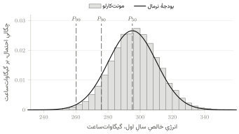
مثال 16.23 (دویست و هفتاد و شش، دویست و شصت) پرسش. P75، P90، P95 و P99ِ انرژیِ خالص را برای سالِ اول بنویسید و بگویید هر کدام در چند سال از صد سال فزونی مییابد.
پاسخ. خروجیِ بالا و شکل 16.6: 285.0، 275.9، 270.5 و 260.3 GWh؛ بهترتیب در ۷۵، ۹۰، ۹۵ و ۹۹ سال از صد سال (اگر مدل درست باشد).
تفسیر. «اگر مدل درست باشد» مهم است: P99 در دمِ توزیع است و بیشتر از همه به شکلِ فرضشده بستگی دارد (مثال 16.12). P90 یعنی یک سال از ده سال کمتر از آن؛ در یک وامِ پانزدهساله، احتمالِ دستکم یک سالِ زیرِ P90 79 % است (P17). وارسی: \(1.2816 \times 14.99 = 19.21\) و \(295.14 - 19.21 = 275.93\).
- P90 کدام صدکِ آماری است؟
- P75ِ 200 GWh با 6 % چیست (P03)؟
- احتمالِ دستکم یک سالِ زیرِ P90 در پانزده سال را حساب کنید.
16.4.2 افق: یک سال یا میانگینِ چند سال
ایده. تغییرِ سال به سال در میانگینِ \(n\) سال با \(\sqrt{n}\) کم میشود، اما عدمِ قطعیتِ بلندمدت در همهٔ سالها مشترک است و کم نمیشود:
\[ u_n = \sqrt{u_\text{lt}^2 + \frac{u_\text{iav}^2}{n}} \tag{16.8}\]
پس P90ِ دهساله (برای میانگینِ دورهٔ وام) از P90ِ یکساله (برای بدترین سالِ تکی) بالاتر است. کدام را به کار ببریم به پرسش بستگی دارد: نقدینگیِ یک سال یا درآمدِ کلِ دوره.
P90 of the mean of n future years (net at the POC):
years sigma GWh P90 GWh
1 14.99 275.93
2 13.47 277.87
3 12.93 278.58
5 12.47 279.16
10 12.12 279.61
15 12.00 279.76
20 11.94 279.84
25 11.90 279.89
limit for many years: the long-term part alone, sigma 11.76, P90 280.07 GWh
more years help less and less: the long-term uncertainty is
shared by every year and does not average out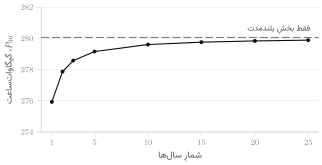
مثال 16.24 (چهار گیگاواتساعت میانِ یک سال و ده سال) پرسش. P90 را برای یک تا بیستوپنج سال بنویسید؛ حدِ آن برای سالهای بسیار چیست؟
پاسخ. خروجیِ بالا و شکل 16.7: یک سال 275.93، پنج سال 279.16، ده سال 279.61، بیستوپنج سال 279.89؛ حد 280.07 GWh.
تفسیر. بیشترِ سود در چند سالِ اول است؛ پس از ده سال، تقریباً فقط عدمِ قطعیتِ بلندمدت میماند. اینجا تغییرِ سال به سال کوچکتر از بخشِ بلندمدت است (هیبرید هموار است)، پس فاصلهٔ یک سال و ده سال کم است؛ در یک مزرعهٔ بادیِ تنها، فاصله بزرگتر است. وارسی: E06: با 3 % و 4 %، یک سال 5 % و ده سال 3.26 %.
- چرا بخشِ بلندمدت با شمارِ سالها کم نمیشود؟
- P90ِ یکساله برای چه تصمیمی و دهساله برای چه تصمیمی؟
- معادلهٔ 16.8 را برای 4 % و 5 % و چهار سال حساب کنید (P09).
16.4.3 توزیعِ کج: میانگین، میانه و P50
ایده. برای توزیعِ متقارن، میانگین، میانه و P50 یکیاند. برای توزیعِ کج نه: جزءهای ضربی و تلفهای یکطرفه (قطعی، بُرش) توزیع را کج میکنند. قراردادِ این کتاب: P50 یعنی میانه؛ مدلِ قطعیِ فصلِ ۱۵ با ورودیهای میانه، تقریباً میانه میدهد. گزارش باید بگوید عددش کدام است، چون مدلِ مالی با میانگین کار میکند (درآمدِ انتظاری).
normal against lognormal for the same median and relative spread:
spread P90 normal P90 lognormal mean of lognormal / median
5 % 93.59 93.94 1.0012
10 % 87.18 88.50 1.0046
20 % 74.37 79.16 1.0168
at the 5 % spread of this plant the shape hardly matters; a
one-sided loss (outages, curtailment) or a wide spread makes
mean, median and P50 differ: the statement says which it isمثال 16.25 (در پنج درصد کم، در بیست درصد زیاد) پرسش. P90ِ نرمال و لگنرمال و نسبتِ میانگین به میانه را برای پهنای 5، 10 و 20 % بنویسید.
پاسخ. خروجیِ بالا: 5 %: 93.59 و 93.94؛ 10 %: 87.18 و 88.50؛ 20 %: 74.37 و 79.16؛ نسبتِ میانگین به میانه 1.0012 تا 1.0168.
تفسیر. در پهنای این نیروگاه (5 %) شکل تقریباً بیاثر است؛ برای یک جزءِ بزرگ و یکطرفه (مثلاً بُرشِ دستوریِ نامعلوم در شبکهای پرتراکم) کجی مهم میشود و نرمال فرض کردن آن، P90 را بد میدهد. وارسی: E11: لگنرمالِ 10 %، 88.50.
- در توزیعِ کج، میانگین و میانه چه فرقی دارند؟
- مدلِ مالی با کدام کار میکند و چرا؟
- کدام جزءهای بودجه یکطرفهاند؟
16.4.4 اطمینان به خودِ P90
ایده. انحرافِ معیار خودش برآورد است: بخشی از بیست سال داده، بخشی از داوری. اگر آن را از بیست مقدار برآورد کرده باشیم، خودِ برآورد پراکندگیِ آماری دارد (توزیعِ خیدو با نوزده درجهٔ آزادی، فصلِ ۳). پس P90 هم یک بازهٔ اطمینان دارد.
confidence of the P90 when the sigma is estimated (one year):
P90 with the stated sigma 14.99 GWh: 275.93 GWh
if the sigma came from 20 values, the P90 itself spans
270.96 to 281.13 GWh (90 % of cases)
the P90 is an estimate with its own uncertainty; a statement
gives it to the nearest GWh and names how the sigma was foundمثال 16.26 (ده گیگاواتساعت بازه برای یک عدد) پرسش. اگر انحرافِ معیار از بیست مقدار برآورد شده باشد، P90ِ یکساله در 90 % حالتها در چه بازهای است؟
پاسخ. خروجیِ بالا: از 270.96 تا 281.13 GWh.
تفسیر. این بازه از نوفهٔ مونتکارلو (مثال 16.16) بسیار بزرگتر است: افزودنِ نمونه، P90 را «دقیقتر» نمیکند، چون دانشِ ما از ورودیها محدود است. این همان دلیلِ گرد کردن به گیگاواتساعت و نوشتنِ روشِ برآوردِ انحرافِ معیار در بیانیه است. وارسی: بازه حدودِ \(\pm 5\) گیگاواتساعت، هماندازهٔ \(1.2816 \times 15 \times 0.27\) (پهنای نسبیِ انحرافِ معیارِ برآوردشده از بیست مقدار).
- چرا انحرافِ معیار خودش عدمِ قطعیت دارد؟
- چرا نمونهٔ بیشترِ مونتکارلو این عدمِ قطعیت را کم نمیکند؟
- بیانیه دربارهٔ روشِ برآوردِ انحرافِ معیار چه مینویسد؟
16.4.5 P90 برای چه به کار میرود
ایده. سنجههای تولید ورودیِ چند تصمیماند، هر کدام با پرسشِ خودش:
| کاربر | پرسش | سنجهٔ رایج (نمونه) | آنچه سنجه نیست |
|---|---|---|---|
| مالک و سرمایهگذار | بازدهِ انتظاری | P50 (میانگین) | سودِ تضمینشده |
| وامدهنده | توانِ بازپرداخت در سالِ بد | P90 یا P99ِ یکساله | همهٔ ریسکهای پروژه |
| خریدارِ برق | تحویلِ قراردادی | مقدارِ قراردادی با جریمه | پیشبینیِ ساعتی |
| بیمهگر | زیانِ درآمد در رخدادِ نادر | سناریو و دم | میانگین |
| بهرهبردار | مقایسهٔ عملکرد | P50ِ ماهانه با دادهٔ همان سال | سقفِ تولید |
مقدارِ مشخصِ احتمالِ فزونی، افق و نسبتِ پوشش را وامدهنده برای هر پروژه تعیین میکند؛ این کتاب فقط ساختار را آموزش میدهد (بخش 16.6).
- چرا مالک با P50 و وامدهنده با P90 کار میکند؟
- برای مقایسهٔ عملکردِ سالِ نخست کدام P50 به کار میرود؟
- چه کسی احتمالِ فزونی و نسبتِ پوششِ یک وام را تعیین میکند؟
16.4.6 مهارتِ پیشبینی، عدمِ قطعیتِ تولید نیست
ایده. فصلِ ۱۵ خطای پیشبینیِ کوتاهمدت را سنجید (جذرِ میانگینِ مربعاتِ ساعتی). این عدد دربارهٔ ساعتهای فرداست؛ عدمِ قطعیتِ تولید دربارهٔ میانگینِ بلندمدت است. دو عدد را نمیشود به هم تبدیل کرد.
a forecast score is not a yield uncertainty:
day-ahead hourly RMSE 10.72 MW = 31 % of the mean power
sum of the hourly errors over the test months +0.68 GWh (bias)
one-year yield sigma 14.99 GWh = 5.1 % of the year
the forecast error is about tomorrow's hours and averages out;
the yield uncertainty is about the long-term mean and does not;
neither number can be turned into the otherمثال 16.27 (سیویک درصد در ساعت، پنج درصد در سال) پرسش. خطای ساعتیِ پیشبینیِ روزِ بعد و عدمِ قطعیتِ یکسالهٔ تولید را مقایسه و توضیح دهید چرا یکی از دیگری به دست نمیآید.
پاسخ. خروجیِ بالا: 10.72 MW، یعنی 31 % از توانِ میانگین در هر ساعت؛ جمعِ خطاها در چهار ماه فقط +0.68 GWh؛ عدمِ قطعیتِ یکساله 14.99 GWh (5.1 %).
تفسیر. خطاهای ساعتیِ پیشبینی در جمع یکدیگر را خنثی میکنند؛ عدمِ قطعیتِ تولید از چیزهایی میآید که در همهٔ ساعتها مشترکاند (کالیبراسیون، تصحیحِ بلندمدت، منحنیِ توان). یک پیشبینِ عالی بیانیهٔ تولید را مطمئنتر نمیکند و بیانیهٔ مطمئن پیشبینیِ فردا را بهتر نمیکند. در گزارشها این دو در دو بخشِ جدا میآیند. وارسی: \(10.72 / 34.4 = 0.31\) (توانِ میانگینِ هیبرید حدودِ 34.4 MW).
- چرا خطاهای ساعتی در جمعِ سالانه خنثی میشوند؟
- چه چیزی عدمِ قطعیتِ تولید را در همهٔ ساعتها مشترک میکند؟
- یک جملهٔ نادرست که این دو را قاطی میکند بنویسید و اصلاح کنید.
16.4.7 نوشتنِ محدودیتها
ایده. بیانیهٔ تولید بدونِ محدودیتها گمراهکننده است. یک فهرستِ کمینه:
- داده و دوره: کدام داده، چه مدت، کدام مرجع؛ ساختگی یا اندازهگیریشده.
- مدل: نسخه، مرز، انتخابها (بخش 15.3.5، بخش 15.3.6).
- بودجه: هر جزء با شاهد؛ همبستگیها و فرضهای شکل.
- آنچه در نظر گرفته نشده: روندِ اقلیمی، تغییرِ کاربریِ زمین در اطراف، بُرشِ آیندهٔ شبکه، تغییرِ قواعدِ بازار.
- قرارداد: احتمالِ فزونی کدام قرارداد است، افق کدام است، P50 میانه است یا میانگین.
- جملهای صریح: «P90 تضمین نیست و ارزیابیِ کاملِ ریسک نیست.»
گزارشی که P90 را با حروفِ درشت و محدودیتها را در پیوستِ آخر میآورد. محدودیتها کنارِ عدد میآیند، با همان اندازهٔ حروف (مثال 16.36).
- شش بخشِ فهرستِ محدودیتها را بنویسید.
- چرا روندِ اقلیمی در محدودیتها میآید؟
- جملهٔ صریحِ پایانی چه چیزی را روشن میکند؟
16.4.8 ماه به ماه: P90ِ ماهانه و نقدینگی
ایده. وام سالانه سنجیده میشود، اما قسط ماهانه یا فصلی پرداخت میشود و انرژی فصلی است. دو پرسش: (۱) P90ِ هر ماه چیست، و آیا جمعِ P90های ماهانه برابرِ P90ِ سالانه است؟ (۲) آیا جریانِ نقدِ ماهانه برای قسطِ ثابت کافی است، یا ذخیرهٔ نقدینگی لازم است؟ بیست سالِ ساختگی: باد از سریِ مرجعِ فصلِ ۱۳ ماه به ماه، خورشیدی از تابشِ ماهانهٔ فصلِ ۱۲.
monthly energy at MV over 20 years (GWh):
month mean sd sd % P90 (normal)
1 22.11 0.75 3.4 21.16
2 25.14 0.61 2.4 24.35
3 28.27 0.90 3.2 27.11
4 25.23 1.11 4.4 23.80
5 31.77 0.95 3.0 30.55
6 20.90 0.87 4.2 19.79
7 25.77 0.79 3.1 24.76
8 20.17 0.82 4.1 19.12
9 30.27 0.86 2.8 29.17
10 23.28 0.84 3.6 22.20
11 19.10 0.85 4.4 18.01
12 29.48 0.86 2.9 28.39
year: mean 301.49, sd 9.51 GWh (3.2 %); sum of monthly P90s 288.39,
year-to-year P90 289.31 GWh
in this synthetic record the months move with their year, so
a month varies about as much as the year in per cent; measured
monthly records usually vary more and the gap between the sum
of monthly P90s and the annual P90 grows; the method stays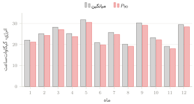
liquidity: monthly cash against level monthly debt service
(service 8,164 k u a year, 680 k u a month):
months short of the service in 20 years: 33 of 240
largest shortfall in one year 298 k u; a six-month reserve holds 4,082 k u
seasonal shortfalls are normal and the reserve absorbs them;
a reserve is sized on monthly data, not on the annual P90مثال 16.28 (سیوسه ماهِ کم در بیست سال) پرسش. میانگین و P90ِ ماهانه را بنویسید؛ جمعِ P90های ماهانه را با P90ِ سالانه مقایسه کنید؛ و بگویید چند ماه جریانِ نقد از قسطِ ماهانه کمتر است.
پاسخ. خروجیهای بالا و شکل 16.8: کمترین ماه نوامبر (19.10 GWh) و بیشترین مه (31.77)؛ جمعِ P90های ماهانه 288.39 در برابرِ P90ِ سال به سالِ 289.31 GWh؛ 33 ماه از ۲۴۰ ماه کم؛ بزرگترین کمبودِ یک سال 298 k u در برابرِ ذخیرهٔ ششماههٔ 4,082 k u.
تفسیر. کمبودِ ماهانه عادی است: نوامبر و اوت بهطورِ میانگین زیرِ قسطاند (نقطهٔ سربهسر حدودِ 20.3 GWh در ماه) و ژوئن در سالهای کم؛ ماههای دیگر جبران میکنند. ذخیرهٔ نقدینگی (اینجا شش ماه قسط، A-283) برای همین است و با دادهٔ ماهانه سنجیده میشود، نه با P90ِ سالانه. در این رکوردِ ساختگی ماهها با سالِ خود حرکت میکنند، پس جمعِ P90های ماهانه نزدیکِ P90ِ سالانه است؛ در دادهٔ واقعی ماهها مستقلترند و جمعِ P90های ماهانه پایینتر از P90ِ سالانه میافتد. وارسی: \(79{,}287 / 9.7122 / 12 = 680\ \text{k u}\) قسطِ ماهانه.
- چرا جمعِ P90های ماهانه برابرِ P90ِ سالانه نیست؟
- ذخیرهٔ نقدینگی برای چه کاری است و با چه دادهای سنجیده میشود؟
- نقطهٔ سربهسرِ ماهانه را با قسطِ 680 k u، قیمتِ 50 u/MWh و هزینهٔ ماهانهٔ 333 k u حساب کنید.
16.4.9 سالهای پیاپیِ همبسته
ایده. معادلهٔ 16.8 سالها را مستقل میگیرد. اگر سالهای خوب و بد پشتِ هم بیایند (همبستگیِ گامِ یکِ مثبت، \(r_1 > 0\)، فصلِ ۳)، میانگینِ \(n\) سال کمتر از \(\sqrt{n}\) آرام میشود؛ شمارِ مؤثرِ سالها تقریباً
\[ n_\text{eff} = n\, \frac{1 - r_1}{1 + r_1} \tag{16.9}\]
است (برای \(n\) بزرگ). بیست سالِ ساختگی:
lag-1 autocorrelation of the 20 annual wind energies: -0.21
effective years in a 10-year mean, n (1 - r1) / (1 + r1):
r1 -0.21: 15.31 years; year-to-year part of the mean 1.15 % (not 1.43 %)
r1 +0.20: 6.67 years; year-to-year part of the mean 1.75 % (not 1.43 %)
r1 +0.40: 4.29 years; year-to-year part of the mean 2.18 % (not 1.43 %)
20 values give a very rough r1; if good and bad years come in
runs (r1 > 0), averaging helps less than the square root of n;
a long reference series is the evidenceمثال 16.29 (منفی در این داده، اما نباید به آن تکیه کرد) پرسش. \(r_1\)ِ بیست سالِ بادی و اثرِ آن و دو مقدارِ مثبتِ فرضی را بر تغییرِ سال به سالِ میانگینِ دهساله بنویسید.
پاسخ. خروجیِ بالا: \(r_1 = -0.21\) و \(n_\text{eff} = 15.3\)؛ با \(r_1 = +0.2\)، 6.67 سال و 1.75 % بهجای 1.43 %؛ با \(+0.4\)، 4.29 سال و 2.18 %.
تفسیر. از بیست مقدار، \(r_1\) بسیار نامطمئن است (خطای استانداردِ آن حدودِ \(1/\sqrt{20} = 0.22\))؛ مقدارِ منفیِ این داده با صفر سازگار است و نباید با آن «سود» گرفت. محتاطانه: سالها را مستقل بگیرید و یک حساسیت با \(r_1\) مثبت بیاورید؛ شاهدِ واقعی از سریِ مرجعِ طولانی (چند دهه) میآید. وارسی: \(10 \times 0.8/1.2 = 6.67\).
- همبستگیِ گامِ یک یعنی چه؟
- چرا با \(r_1\) مثبت میانگین کمتر آرام میشود؟
- چرا مقدارِ منفیِ \(r_1\) از بیست سال را نباید به کار برد؟
16.4.10 دو برآوردِ مستقل
ایده. گاهی دو برآورد هست: برآوردِ ما و برآوردِ مشاورِ دوم. اگر خطاهایشان مستقل باشند، میانگینِ وزندار با عکسِ واریانس از هر دو دقیقتر است:
\[ \hat P = \frac{P_1/\sigma_1^2 + P_2/\sigma_2^2}{1/\sigma_1^2 + 1/\sigma_2^2}, \qquad \sigma = \left(\frac{1}{\sigma_1^2} + \frac{1}{\sigma_2^2}\right)^{-1/2} \tag{16.10}\]
اگر خطاها همبسته باشند (یک داده، یک روش)، وزنها و سود تغییر میکنند (A-283: برآوردِ ما 295 ± 12، مشاورِ دوم 288 ± 15 GWh).
two estimates of the long-term P50 (sigma, teaching A-283):
ours 295 +/- 12 GWh, second consultant 288 +/- 15 GWh
r 0.0: weights 0.61 / 0.39, combined 292.3 +/- 9.4 GWh
r 0.5: weights 0.71 / 0.29, combined 293.0 +/- 11.3 GWh
difference 7 GWh is 0.36 sigma of the difference: consistent
combining helps only if the errors are independent; two
consultants with the same data and methods are notمثال 16.30 (نه و چهار دهم یا یازده و سه دهم) پرسش. دو برآورد را با همبستگیِ خطای صفر و 0.5 ترکیب کنید و سازگاریِ آنها را بسنجید.
پاسخ. خروجیِ بالا: مستقل: وزنها 0.61 و 0.39، 292.3 ± 9.4 GWh؛ همبسته: 0.71 و 0.29، 293.0 ± 11.3 GWh؛ اختلافِ 7 GWh برابرِ 0.36 انحرافِ معیارِ اختلاف.
تفسیر. دو برآوردِ مستقل عدمِ قطعیت را از 12 به 9.4 میرسانند؛ اگر همبسته باشند، تقریباً هیچ سودی نیست. پس ارزشِ «نظرِ دوم» به استقلالِ آن است: دادهٔ دیگر، مدلِ دیگر، تیمِ دیگر. اختلافِ کوچک (کمتر از یک انحرافِ معیار) یعنی سازگاری؛ اختلافِ بزرگ یعنی یکی چیزی را جا انداخته است و پل (بخش 15.5.6) لازم است. وارسی: \((1/144 + 1/225)^{-1/2} = 9.37\ \text{GWh}\).
- معادلهٔ 16.10 را برای 300 ± 10 و 290 ± 10 حساب کنید.
- چرا دو برآوردِ همبسته سودِ کمی دارند؟
- اختلافِ بزرگِ دو برآورد چه اقدامی میخواهد؟
16.4.11 یک نیروگاه، هفت عدد
ایده. «تولیدِ نیروگاهِ P چقدر است؟» پاسخِ یکتا ندارد؛ هر عدد مرز، سال، سناریو و آمارهٔ خودش را دارد. هفت عدد از همین کتاب:
| عدد (GWh) | مرز | سال | سناریو | آماره | منبع |
|---|---|---|---|---|---|
| 301.5 | ولتاژِ متوسط | سالِ اول | S0 | P50 | مثال 15.33 |
| 295.1 | نقطهٔ اتصال | سالِ اول | S0 | P50 (میانه) | D-019 |
| 294.9 | نقطهٔ اتصال | سالِ اول | S0 | میانگینِ مونتکارلو | مثال 16.33 |
| 293.5 | نقطهٔ اتصال | سالِ اول | S1 با جابهجایی | P50 | مثال 15.32 |
| 288.9 | نقطهٔ اتصال | میانگینِ ۲۵ سال | S0 | P50 | مثال 15.25 |
| 280 | نقطهٔ اتصال | میانگینِ ۱۰ سال | S0 | P90 | مثال 16.24 |
| 276 | نقطهٔ اتصال | یک سال | S0 | P90 | مثال 16.36 |
مثال 16.31 (هفت عددِ درست) پرسش. کدام عدد را برای هر یک از این پرسشها به کار میبرید: (۱) مقایسهٔ سالِ نخستِ بهرهبرداری با مدل در ولتاژِ متوسط؛ (۲) بدهی؛ (۳) ارزشِ پروژه برای مالک در طولِ عمر؛ (۴) درآمدِ نیروگاه با باتری؟
پاسخ. (۱) 301.5 با دادهٔ همان سال (بخش 15.5.4)؛ (۲) 276 و حالتهای دیگرِ وامدهنده (بخش 16.6.1)؛ (۳) سریِ سالانه با میانگینِ 288.9 (و میانگین، نه میانه)؛ (۴) 293.5 با مدلِ قیمت.
تفسیر. هر هفت عدد درستاند؛ خطا وقتی است که یکی بهجای دیگری به کار رود. پس هر عدد در هر گزارش با چهار برچسب میآید: مرز، سال یا افق، سناریو، آماره. وارسی: \(301.5 \times 0.979 = 295.2\) (نسبتِ خالص به ولتاژِ متوسط، درست).
- چهار برچسبِ هر عددِ تولید را بنویسید.
- چرا میانگینِ مونتکارلو کمی زیرِ P50ِ قطعی است؟
- برای مقایسهٔ عملکرد کدام عدد و چرا؟
16.5 ت. آزمایشگاهِ بودجهٔ عدمِ قطعیت
این آزمایشگاه بودجهٔ کاملِ نیروگاهِ P را میسازد (مثالِ کارشدهٔ فصل)، آن را با مونتکارلو میآزماید، بزرگترین سهمها را پیدا میکند، ارزشِ اندازهگیریِ بیشتر را میسنجد و بیانیهٔ تولید را مینویسد. همهٔ عددها از برنامه میآیند:
برنامه:
python -m companion.ch16.lab_d16.5.1 بودجهٔ شفاف: مثالِ کارشدهٔ فصل
ایده. همهٔ جزءها با یک یکا (گیگاواتساعت در ولتاژِ متوسط) کنارِ هم: جزءهای بادی ضربِ انرژیِ بادی، خورشیدی ضربِ انرژیِ خورشیدی، جزءهای نیروگاه ضربِ کلِ انرژی، و تغییرِ سال به سال با همبستگیِ +0.12 بهصورتِ یک سطر. ترکیبِ بلندمدت با معادلهٔ 16.3، یک سال و ده سال با معادلهٔ 16.8، سپس تبدیل به نقطهٔ اتصال با نسبتِ 0.979 (خالص به ولتاژِ متوسط در مدلِ 15.1).
def items(wind=None, pv=None):
"""(name, technology, sigma GWh at MV) for every part, plus the
year-to-year term."""
b = src.base()
s = src.sigmas()
mv = s["mv"]
out = [(p.name, "wind", p.u * b["w"]) for p in (wind or src.WIND)]
out += [(p.name, "PV", p.u * b["pv"]) for p in (pv or src.PV)]
out += [(p.name, "plant", p.u * mv) for p in src.PLANT]
out.append(("year-to-year (wind and PV, r 0.12)", "future", s["iav"]))
return out
def total(it, years: int = 1) -> float:
lt = [x[2] for x in it if x[1] != "future"]
iav = [x[2] for x in it if x[1] == "future"][0]
return math.sqrt(sum(v * v for v in lt) + iav ** 2 / years)uncertainty budget of Plant P, net energy (sigma in GWh at MV;
P50 295.14 GWh at the POC, model 15.1, scenario S0):
component tech. sigma share
year-to-year (wind and PV, r 0.12) future 9.51 38.5 %
long-term correction and period wind 7.55 24.3 %
anemometer calibration, mounting wind 4.97 10.5 %
cross-prediction to the turbines wind 4.75 9.6 %
power curve wind 3.86 6.4 %
irradiance sensor, maintenance PV 2.42 2.5 %
wake model wind 1.93 1.6 %
availability (energy-based) wind 1.93 1.6 %
long-term correction and period PV 1.75 1.3 %
PV model (temperature, angle, light) PV 1.63 1.1 %
transposition model PV 1.08 0.5 %
module power (flash-test sample) PV 1.08 0.5 %
icing and environmental stops wind 0.97 0.4 %
electrical losses plant 0.90 0.3 %
grid outages, ordered curtailment plant 0.90 0.3 %
hub density wind 0.58 0.1 %
soiling and cleaning PV 0.54 0.1 %
availability PV 0.54 0.1 %
inverter efficiency PV 0.33 0.0 %
degradation, first year PV 0.33 0.0 %
long-term (all but the year-to-year) 12.01
one year 15.32
ten-year mean 12.38
at the POC (x 0.979): one year 14.99, ten years 12.12 GWh
P90 one year 275.9, P99 one year 260.3, P90 ten years 279.6 GWhمثال 16.32 (از بیست جزء تا یک بازه) پرسش. با بودجهٔ بالا، عدمِ قطعیتِ بلندمدت، یکساله و دهساله را در ولتاژِ متوسط و نقطهٔ اتصال، و P90ِ یکساله، P99ِ یکساله و P90ِ دهساله را بنویسید؛ بزرگترین سهمها کداماند؟
پاسخ.
- در ولتاژِ متوسط: بلندمدت 12.01 GWh؛ یک سال 15.32؛ ده سال 12.38 GWh.
- در نقطهٔ اتصال (ضربِ 0.979): یک سال 14.99، ده سال 12.12 GWh.
- مقدارها: P90ِ یکساله 275.9، P99ِ یکساله 260.3، P90ِ دهساله 279.6 GWh.
- بزرگترین سهمها (شکل 16.9): تغییرِ سال به سال 38.5 %، تصحیحِ بلندمدتِ بادی 24.3 %، اندازهگیریِ بادی 10.5 %، پیشبینیِ متقابل 9.6 %، منحنیِ توان 6.4 %؛ این پنج با هم نزدیکِ 90 %.
تفسیر. بیست جزء، اما پنج جزء تقریباً همه چیزند و چهار تا از آنها بادیاند: عدمِ قطعیتِ این هیبرید را باد میسازد. خورشیدی، با اینکه یکسومِ انرژی است، کمتر از 6 % از واریانس را دارد. ده جزءِ کوچکتر با هم کمتر از 3 % اند؛ دقیقتر کردنشان کارِ بیثمری است. وارسی:
\[ \sqrt{12.01^2 + 9.51^2} = 15.32\ \text{GWh}, \qquad 295.14 - 1.2816 \times 14.99 = 275.93\ \text{GWh} \]
- چرا همهٔ جزءها پیش از ترکیب به یک یکا برده میشوند؟
- چرا تغییرِ سال به سال یک سطرِ جدا دارد؟
- چند جزء نود درصدِ واریانس را میسازند؟
16.5.2 قطعی در برابرِ احتمالاتی
ایده. بودجهٔ شفاف (ریشهٔ مجموعِ مربعات) و مونتکارلو از دو راه به یک پرسش پاسخ میدهند. اگر همخوان باشند، بودجهٔ ساده کافی و شفافتر است؛ اگر نه، اثرِ غیرخطی یا کجی هست که بودجهٔ ساده نمیبیند. بیست هزار نمونه از انتهای مدلِ 15.1، برای یک سال و ده سال:
Monte Carlo (20,000 draws, plant end of model 15.1) against the
analytic budget:
horizon analytic P90 MC mean MC P50 MC P90 MC P99
1 year 275.93 294.92 294.82 276.19 260.78
10 years 279.61 294.97 294.80 279.73 267.97
the two agree within the Monte Carlo noise: for this plant a
transparent root-sum-square budget is enough; the Monte Carlo
checks it and would catch strong non-linearity or skewمثال 16.33 (دو راه، یک پاسخ) پرسش. P90ِ تحلیلی و مونتکارلو را برای یک و ده سال، و میانگین و میانهٔ مونتکارلو را با مقدارِ قطعیِ 295.14 GWh مقایسه کنید.
پاسخ. خروجیِ بالا: یک سال: تحلیلی 275.93، مونتکارلو 276.19؛ ده سال: 279.61 و 279.73؛ میانگین 294.92 و میانه 294.82 GWh.
تفسیر. اختلافِ P90ها 0.26 و 0.12 GWh است، هماندازهٔ نوفهٔ مونتکارلو (معادلهٔ 16.5: حدودِ 0.18 GWh برای بیست هزار). میانگینِ مونتکارلو 0.2 GWh زیرِ مقدارِ قطعی است: اثرِ کوچکِ تلفهای کوژ (بخش 16.3.7). پس بیانیه بودجهٔ شفاف را گزارش میکند و مونتکارلو را وارسی میداند. وارسی: \(1.71 \times 15 / \sqrt{20{,}000} = 0.18\ \text{GWh}\).
- چرا وقتی دو روش همخواناند، بودجهٔ ساده ترجیح دارد؟
- اختلافِ 0.26 GWh را چگونه داوری میکنید؟
- چرا میانگینِ مونتکارلو کمی زیرِ مقدارِ قطعی است؟
16.5.3 بزرگترین سهمها: کجا کار کنیم
ایده. سهمِ واریانس میگوید کدام جزء مهم است؛ اما پرسشِ مدیر این است: اگر یک جزء را نصف کنیم، P90 چقدر بالا میرود؟ پاسخ برای هر جزء جداگانه حساب میشود.
halving one component at a time: one-year P90 (now 275.93 GWh):
year-to-year (wind and PV, r 0.12) future +3.01 GWh
long-term correction and period wind +1.84 GWh
anemometer calibration, mounting wind +0.77 GWh
cross-prediction to the turbines wind +0.70 GWh
power curve wind +0.46 GWh
irradiance sensor, maintenance PV +0.18 GWh
the year-to-year term cannot be halved (it is the future); of
the rest, the wind long-term correction and the measurement
chain pay most: better data, not a cleverer modelمثال 16.34 (نصف کردنِ تصحیحِ بلندمدت: یک و هشت دهم) پرسش. اثرِ نصف کردنِ هر یک از شش جزءِ بزرگ را بر P90ِ یکساله بنویسید و بگویید کدام شدنی است.
پاسخ. خروجیِ بالا: تغییرِ سال به سال +3.01 (اما شدنی نیست)، تصحیحِ بلندمدتِ بادی +1.84، اندازهگیریِ بادی +0.77، پیشبینیِ متقابل +0.70، منحنیِ توان +0.46، حسگرِ خورشیدی +0.18 GWh.
تفسیر. تغییرِ سال به سال آینده است و نصف نمیشود (جز با نگاه به میانگینِ چند سال). از بقیه، کاهندههای اصلی دادهاند: دورهٔ طولانیترِ دکل، مرجعِ بلندمدتِ بهتر، اندازهگیری در جای توربینها؛ نه مدلِ پیچیدهتر. اثرِ نصف کردن کمتر از سهم است، چون ریشهٔ مجموعِ مربعات کاهشِ یک جزء را میانِ همه پخش میکند. وارسی: نصف کردنِ \(7.55\) واریانس را \(\tfrac{3}{4} \times 7.55^2 = 42.8\) کم میکند؛ \(\sqrt{15.32^2 - 42.8} = 13.85\) و
\[ 1.2816 \times (15.32 - 13.85) \times 0.979 = 1.84\ \text{GWh} \]
- چرا تغییرِ سال به سال نصف نمیشود؟
- چرا اثرِ نصف کردن از سهمِ واریانس کمتر است؟
- سه کاهندهٔ دادهای برای جزءهای بادی بنویسید.
16.5.4 ارزشِ اندازهگیریِ بیشتر
ایده. هر اقدامِ اندازهگیری یک جزء را کم میکند و P90 را بالا میبرد؛ و هر گیگاواتساعتِ P90 بدهیِ بیشتری را ممکن میکند (بخش 16.6.3). سه اقدامِ آموزشی (A-280): سالِ دومِ دکل (تصحیحِ بلندمدت از 2.0 به 1.5 % تندی)، کمپینِ لیدار در جای توربینها (پیشبینیِ متقابل از 1.35 به 0.8 %)، و تمیز نگه داشتنِ ایستگاه (جزءِ نگهداری از 1.0 به 0.5 %).
measuring better (A-280), one-year P90 now 275.93 GWh:
second mast year (MCP 2.0 -> 1.5 %) +0.91 GWh
lidar at the turbines (1.35 -> 0.8 %) +0.61 GWh
station kept clean (1.0 -> 0.5 %) +0.04 GWh
all three +1.59 GWh
each GWh of P90 is debt capacity (lab E): measuring has a
value that can be set against its costمثال 16.35 (یک و شش دهم گیگاواتساعت از سه اقدام) پرسش. اثرِ هر اقدام و هر سه با هم را بر P90ِ یکساله بنویسید.
پاسخ. خروجیِ بالا: سالِ دومِ دکل +0.91، لیدار +0.61، ایستگاهِ تمیز +0.04، هر سه +1.59 GWh.
تفسیر. سالِ دومِ دکل بیشترین اثر را دارد، اما زمان میبرد (یک سال تأخیر در تأمینِ مالی)؛ لیدار سریعتر است. ایستگاهِ تمیز برای P90 تقریباً بیاثر است (خورشیدی سهمِ کوچکی دارد) اما برای پایشِ عملکرد مهم است (فصلِ ۵۰). تصمیم با ارزشِ پولی گرفته میشود: مثال 16.39. وارسی: جمعِ اثرهای جدا \(0.91 + 0.61 + 0.04 = 1.56\) و اثرِ با هم 1.59 GWh: کمی بیشتر، چون جذر خمیده است و برداشتنِ واریانس از مجموعِ کوچکترشده، انحرافِ معیار را بیشتر کم میکند.
- چرا سالِ دومِ دکل با وجودِ اثرِ بیشتر همیشه بهترین گزینه نیست؟
- چرا اثرِ ایستگاهِ تمیز بر P90 کوچک است؟
- چرا اثرِ هر سه با هم کمی بیشتر از جمعِ اثرهاست؟
16.5.5 بیانیهٔ احتمالاتیِ تولید
ایده. همهٔ اینها در یک بیانیه جمع میشوند که خوانندهٔ غیرمتخصص هم بفهمد و بازبین بتواند هر عدد را تا منبعش دنبال کند: عددها گرد به گیگاواتساعت، سهمهای بزرگ، و محدودیتها کنارِ عددها (بخش 16.4.7).
yield statement, Plant P, scenario S0 (PLP-GEN-REP-0009, draft):
P50 net at the POC, first year: 295 GWh (model 15.1, D-019)
one-year sigma 15 GWh (5.1 %); ten-year 12 GWh
P90 one year about 276 GWh; P99 one year about 260 GWh;
P90 ten years about 280 GWh
largest contributors: year-to-year wind, wind long-term
correction, wind measurement, cross-prediction, power curve
limits: synthetic data; teaching sigmas (A-277..A-279); no
climate trend; degradation and lifetime series in ch 15;
not a guarantee and not a complete risk assessmentمثال 16.36 (بیانیهٔ نیروگاهِ P) پرسش. بیانیهٔ احتمالاتیِ تولیدِ نیروگاهِ P را برای سناریوی S0 بنویسید و دفاع کنید.
پاسخ. خروجیِ بالا: P50ِ سالِ اول حدودِ 295 GWh در نقطهٔ اتصال؛ عدمِ قطعیتِ یکساله 15 GWh (5.1 %)؛ P90ِ یکساله حدودِ 276، P99ِ یکساله حدودِ 260 و P90ِ دهساله حدودِ 280 GWh؛ پنج سهمِ بزرگ و پنج محدودیت.
تفسیر (دفاع). هر عدد سه پشتوانه دارد: مدل (15.1، D-019، با موازنهٔ ماهانه و آبشار)، بودجه (بیست جزء با منبع، مثال 16.32) و وارسی (مونتکارلو، مثال 16.33). پرسشهای محتملِ بازبین و پاسخها: «چرا همبستگیِ صفر؟» (A-279 با حساسیتِ مثال 16.14)؛ «چرا 1.82؟» (مثال 16.6)؛ «روندِ اقلیمی؟» (در محدودیتها، نامعلوم)؛ «چرا منحنیِ توان آموزشی است؟» (منتظرِ منحنیِ تضمینشده، U-064 و فصلِ ۳۹). وارسی: \(295 - 1.2816 \times 15 = 275.8\)، گرد به 276.
- سه پشتوانهٔ هر عددِ بیانیه کداماند؟
- چهار پرسشِ محتملِ بازبین را با پاسخ بنویسید.
- چرا عددها در بیانیه گرد میشوند؟
16.6 ث. از تولید تا تأمینِ مالی
این بخش نشان میدهد توزیعِ بلندمدتِ تولید چگونه به تصمیمِ مالی میرسد. شرطها آموزشیاند (A-281): قیمتِ 50 u/MWh، هزینهٔ بهرهبرداریِ 4,000 k u در سال، نرخِ 6 %، پانزده سال، و نسبتِ پوششِ 1.30 برای P50، 1.20 برای P90ِ یکساله و 1.05 برای P99ِ یکساله. اینها شرطِ بازار نیستند: وامدهنده حالتها، افقها و نسبتهای خودش را برای هر پروژه تعیین میکند، مدلِ مالیِ کامل در فصلهای ۲۰ و ۲۱ میآید و هر عددِ این بخش فقط ساختارِ استدلال را نشان میدهد.
برنامه:
python -m companion.ch16.lab_e16.6.1 حالتهای مالیِ جدا
ایده. هر حالتِ انرژی (مثلاً P50، P90ِ یکساله، P99ِ یکساله) یک جریانِ نقدِ آزاد برای بازپرداخت (\(\text{CFADS}\)، فصلِ ۵) میدهد: انرژی ضربِ قیمت منهای هزینه. وامدهنده برای هر حالت یک نسبتِ پوشش (\(\text{DSCR}\)) میخواهد: بازپرداختِ سالانه باید از \(\text{CFADS}/\text{DSCR}\) آن حالت کمتر باشد. بدهیای که همهٔ حالتها میپذیرند، با ضریبِ سالواره (\(\text{AF}\)، فصلِ ۳) به ارزشِ حال برده میشود:
\[ D = \text{AF}(r, n) \times \min_\text{case} \frac{\text{CFADS}_\text{case}}{\text{DSCR}_\text{case}} \tag{16.11}\]
def annuity(rate: float, years: int) -> float:
"""Present value of 1 a year for the given years."""
return (1.0 - (1.0 + rate) ** -years) / rate
def debt_size(cfads_by_case: dict, dscr_by_case: dict, rate: float,
years: int) -> tuple[float, str]:
"""Largest level-annuity debt that every case can serve at its
cover ratio: debt service <= CFADS / DSCR in each case."""
best = None
for case, cf in cfads_by_case.items():
ds = cf / dscr_by_case[case]
if best is None or ds < best[0]:
best = (ds, case)
return best[0] * annuity(rate, years), best[1]financing cases (teaching terms A-281; k u = thousand units):
case energy GWh CFADS k u ratio debt it allows k u
P50 295.14 10,757 1.30 80,365
P90 1y 275.93 9,796 1.20 79,287
P99 1y 260.26 9,013 1.05 83,369
debt 79,287 k u, set by the P90 1y case; yearly service 8,164 k u
cover ratio of the P50 case at that debt: 1.32
the binding case decides the debt: here P90 1y; the others
have room to spareمثال 16.37 (P90ِ یکساله تعیین میکند) پرسش. جریانِ نقد و بدهیِ مجازِ هر حالت را حساب کنید و بگویید کدام حالت بدهی را تعیین میکند.
پاسخ. خروجیِ بالا: P50: 10,757 k u و 80,365؛ P90ِ یکساله: 9,796 و 79,287؛ P99ِ یکساله: 9,013 و 83,369 k u. بدهی 79,287 k u، تعیینشده با P90ِ یکساله؛ بازپرداختِ سالانه 8,164 k u.
تفسیر. حالتِ تعیینکننده کمترین بدهی را میدهد؛ بقیه جا دارند (پوششِ P50 در این بدهی 1.32). با شرطهای دیگر حالتِ دیگری تعیینکننده میشود (بخش 16.6.2). عددِ بدهی نتیجه است، نه هدف: هر تغییرِ کوچک در قیمت، هزینه یا نسبت آن را جابهجا میکند. وارسی: E10: \(9{,}796 / 1.20 \times 9.7122 = 79{,}284\) (درست، گرد شده).
- \(\text{CFADS}\) را برای 280 GWh با شرطهای این بخش حساب کنید (P15).
- «حالتِ تعیینکننده» یعنی چه؟
- چرا بدهی با ضریبِ سالواره ضرب میشود؟
16.6.2 بدهی و عدمِ قطعیت
ایده. با عدمِ قطعیتِ بیشتر، P90 و P99 پایینتر میروند و از جایی به بعد حالتهای پایین بدهی را تعیین میکنند. منحنیِ بدهی بر حسبِ عدمِ قطعیت نشان میدهد عدمِ قطعیت کجا هزینه دارد.
debt against the one-year sigma of the net energy:
sigma % debt k u binding case
3 80,365 P50
4 80,365 P50
5 79,409 P90 1y
6 77,878 P90 1y
7 76,348 P90 1y
8 74,097 P99 1y
up to about 4.5 % the P50 case binds and uncertainty costs no
debt; beyond it every point costs about 1,500 k u, and at 8 %
the P99 case takes over: the owner pays for uncertainty with
equity once a downside case binds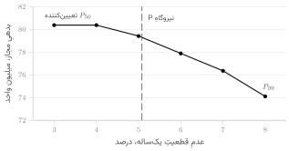
مثال 16.38 (سه ناحیه) پرسش. بدهیِ مجاز و حالتِ تعیینکننده را برای عدمِ قطعیتِ 3 تا 8 % بنویسید.
پاسخ. خروجیِ بالا و شکل 16.10: تا 4 % 80,365 k u با P50؛ از 5 تا 7 % با P90ِ یکساله، هر درصد حدودِ 1,500 k u کمتر؛ در 8 % 74,097 k u با P99ِ یکساله.
تفسیر. سه ناحیه: (۱) عدمِ قطعیتِ کم، بدهی را انرژیِ میانه تعیین میکند و کاهشِ عدمِ قطعیت سودی ندارد؛ (۲) ناحیهٔ میانی، هر درصد پول است؛ (۳) عدمِ قطعیتِ زیاد، دمِ توزیع تعیین میکند. نیروگاهِ P (5.08 %) درست پس از مرزِ ناحیهٔ اول است: کاهشِ عدمِ قطعیت هنوز ارزش دارد، اما نه بینهایت. وارسی: \(79{,}409 - 77{,}878 = 1{,}531\ \text{k u}\) برای یک درصد.
- سه ناحیهٔ منحنیِ بدهی را توضیح دهید.
- چرا در ناحیهٔ اول کاهشِ عدمِ قطعیت سودی ندارد؟
- اگر نسبتِ P90 به 1.30 برسد، مرزِ ناحیهها به کدام سو میرود؟
16.6.3 ارزشِ اندازهگیریِ بیشتر، به پول
ایده. وقتی P90ِ یکساله تعیینکننده است، هر گیگاواتساعتِ P90 بدهیِ ثابتی میارزد: قیمت تقسیم بر نسبتِ پوشش ضربِ ضریبِ سالواره. سه اقدامِ مثال 16.35 با هم +1.59 GWh میدادند.
value of measuring better (lab D: +1.59 GWh of one-year P90):
sigma 14.99 -> 13.75 GWh; debt 79,287 -> 79,930 k u (+643 k u)
about 405 k u of debt per GWh of P90 while the P90 1y case binds
(= 50 k u per GWh / 1.20 x annuity factor 9.712)
set against the cost of a second mast year, a lidar campaign
and a cleaning routine, and against the delay to financingمثال 16.39 (ششصد و چهل و سه هزار واحد بدهیِ بیشتر) پرسش. بدهیِ اضافه از سه اقدامِ اندازهگیری و ارزشِ هر گیگاواتساعتِ P90 را حساب کنید.
پاسخ. خروجیِ بالا: انحرافِ معیار از 14.99 به 13.75 GWh؛ بدهی +643 k u؛ هر گیگاواتساعتِ P90 حدودِ 405 k u (P24).
تفسیر. اگر هزینهٔ سه اقدام (بهاضافهٔ هزینهٔ تأخیر) کمتر از 643 k u بدهیِ بیشتر (و هزینهٔ سرمایهٔ جانشین) باشد، ارزش دارد. این مقایسه به ناحیه بستگی دارد: در ناحیهٔ اولِ مثال 16.38 ارزش صفر بود. این نه سودِ تضمینی است و نه همهٔ ارزشِ داده: اندازهگیریِ بهتر خطرِ سوگیری (خطای سیستماتیکِ ناشناخته) را هم کم میکند. وارسی: \(50 / 1.20 \times 9.712 = 404.7\) و \(1.59 \times 404.7 = 643\).
- ارزشِ یک گیگاواتساعتِ P90 را با نسبتِ 1.25 حساب کنید.
- چرا ارزش در ناحیهٔ اول صفر است؟
- چه ارزشی از اندازهگیری در این حساب نمیآید؟
16.6.4 حالتهای بدی که احتمالِ فزونی نیستند
ایده. انرژی فقط یکی از ریسکهاست. قیمت، هزینه، ضمانتِ دسترسپذیری، جبرانِ بُرش، نرخِ ارز و نرخِ بهره ریسکهای جدا دارند. وامدهنده حالتهای جدا برای آنها میسازد و گاهی روی هم میگذارد؛ این انتخابِ اوست، نه یک احتمالِ فزونی. اینجا بدهیِ تعیینشده ثابت است و پوشش در هر حالت دیده میشود.
downside cases that are not P-values (debt fixed as sized):
case CFADS k u cover
P50 energy 10,757 1.32
P90 one-year energy 9,796 1.20
P50 energy, price -10 % 9,281 1.14
P50 energy, operating cost +15 % 10,157 1.24
P50, 2 % availability below guarantee 10,462 1.28
P90 1y, price -10 %, cost +15 % 7,817 0.96
price, cost and contract risks sit beside the energy cases;
stacking them is a lender's choice, not a P-valueمثال 16.40 (قیمتِ ده درصد کمتر از P90 بدتر است) پرسش. پوشش را در شش حالت بنویسید و بگویید کدام حالت از P90ِ انرژی بدتر است.
پاسخ. خروجیِ بالا: P50 1.32؛ P90ِ یکساله 1.20؛ قیمتِ −10 % 1.14؛ هزینهٔ +15 % 1.24؛ دسترسپذیریِ 2 % کمتر از ضمانت 1.28؛ سه بد با هم 0.96.
تفسیر. کاهشِ دهدرصدیِ قیمت از سالِ P90 بدتر است: ریسکِ انرژی همهٔ ریسک نیست. سه حالتِ بد با هم پوشش را زیرِ یک میبرند؛ آیا چنین ترکیبی لازم است، تصمیمِ وامدهنده است و احتمالِ آن از این فصل نمیآید. وارسی: \((295.14 \times 45 - 4{,}000) / 8{,}164 = 1.14\).
- پنج ریسکِ غیرانرژی را نام ببرید.
- چرا ترکیبِ حالتهای بد احتمالِ معلوم ندارد؟
- چه کسی تصمیم میگیرد کدام حالتها روی هم گذاشته شوند؟
16.6.5 P90 تضمین نیست
ایده. اگر فروشندهای در قراردادِ خرید تحویلِ P90ِ یکساله را تضمین کند و کمبود با قیمتِ 100 u/MWh (A-268) جریمه شود، هنوز در یک سال از ده سال کم میآورد. هزینهٔ انتظاریِ این تضمین را میشود حساب کرد:
a delivery guarantee at the one-year P90 (275.9 GWh), shortfall at 100 u/MWh:
years short: 10.0 %; mean shortfall in those years 7.11 GWh
expected cost 71 k u a year; worst 1 % of years 1,561 k u
a P90 is not a promise: one year in ten falls short, and the
contract decides who paysمثال 16.41 (هفتاد و یک هزار واحد در سال، اما گاهی یک و نیم میلیون) پرسش. احتمالِ کمبود، کمبودِ میانگین در سالهای کم و هزینهٔ انتظاری و بدترین یک درصد را بنویسید.
پاسخ. خروجیِ بالا: 10.0 % سالها؛ کمبودِ میانگین 7.11 GWh در آن سالها؛ هزینهٔ انتظاری 71 k u در سال؛ بدترین یک درصد 1,561 k u.
تفسیر. تضمینِ P90 ارزان به نظر میرسد (میانگین)، اما در سالِ بد گران است (دم). کسی که تضمین میدهد ریسک را میخرد و باید سرمایه یا بیمه برایش داشته باشد. پس در هر قرارداد روشن میشود: مقدار کدام احتمالِ فزونی است، با کدام افق، و چه کسی کمبود را میپردازد. وارسی: P25: \(0.71 \times 100 = 71\ \text{k u}\) (کمبودِ انتظاری \(0.1 \times 7.11 = 0.71\ \text{GWh}\)).
- چرا تضمینِ P90 در یک سال از ده سال کمبود دارد؟
- هزینهٔ انتظاری و هزینهٔ دم چه فرقی دارند؟
- احتمالِ دستکم دو سالِ زیرِ P90 در ده سال چیست (P16)؟
16.6.6 سبدِ نیروگاهها
ایده. مالکی که چند نیروگاه دارد، عدمِ قطعیتِ سبد را میبیند. تغییرِ سال به سالِ نیروگاههای نزدیک همبسته است (هوای مشترک)، اما بخشِ بلندمدتِ آنها اغلب مستقل است (دکلها و مدلهای جدا). دو نیروگاه مانندِ نیروگاهِ P با همبستگیِ سال به سالِ متفاوت (A-281):
two plants like Plant P in one portfolio (one year):
r of years portfolio sigma % P90 of the sum / 2 x single P90
0.0 3.59 % 1.0204
0.5 3.92 % 1.0159
0.9 4.17 % 1.0125
plants far apart vary less together: the portfolio P90 is more
than the sum of single P90s; nearby plants share their weatherمثال 16.42 (دو درصد بالاتر از دو برابر) پرسش. عدمِ قطعیتِ نسبیِ سبد و نسبتِ P90ِ سبد به دو برابرِ P90ِ یک نیروگاه را برای همبستگیهای 0، 0.5 و 0.9 بنویسید.
پاسخ. خروجیِ بالا: 3.59، 3.92 و 4.17 %؛ نسبتها 1.0204، 1.0159 و 1.0125.
تفسیر. حتی دو نیروگاهِ نزدیک (\(r = 0.9\)) سبدی با P90ِ بالاتر از جمعِ P90ها میسازند، چون بخشِ بلندمدتشان مستقل است. اگر هر دو با یک مدلساز و یک مرجع ارزیابی شده باشند، این استقلال از بین میرود و سودِ سبد کم میشود: همبستگیِ خطاها به اندازهٔ همبستگیِ هوا مهم است. وارسی: با \(r = 0\)،
\[ \sqrt{2 \times 11.76^2 + 2 \times 9.31^2} / 590.3 = 3.59\ \% \]
- چرا بخشِ بلندمدتِ دو نیروگاه اغلب مستقل است؟
- چرا P90ِ سبد از جمعِ P90ها بیشتر است؟
- چه چیزی همبستگیِ خطاهای دو ارزیابی را بالا میبرد؟
16.6.7 سالهای بهرهبرداری عدمِ قطعیت را کم میکنند
ایده. پس از ساخت، هر سالِ تولیدِ اندازهگیریشده (با کنتورِ درآمدی، تصحیحشده با مرجعِ بلندمدت) شاهدی مستقیم دربارهٔ میانگینِ بلندمدت است؛ اما با نوفهٔ تغییرِ سال به سال. یک مدلِ آموزشی (A-282): بودجهٔ این فصل پیشین است و هر سال یک اندازهگیری با انحرافِ معیارِ سال به سال؛ ترکیبِ آنها:
\[ u_\text{lt,new} = \left(\frac{1}{u_\text{lt}^2} + \frac{n}{u_\text{iav}^2}\right)^{-1/2} \tag{16.12}\]
این مدل کنتور را دقیق و سالها را مستقل میگیرد؛ در واقع خطای کنتور، تصحیحِ سالها با مرجع و تغییرِ نیروگاه (تخریب، بهبودِ دسترسپذیری) چیزی بر آن میافزایند.
narrowing the long-term part with operating years (teaching):
years long-term sigma one-year P90 ten-year P90 (GWh)
0 11.76 275.93 279.61
1 7.30 279.99 285.06
2 5.74 281.13 286.87
3 4.89 281.67 287.83
5 3.92 282.20 288.86
10 2.85 282.67 289.89
in this teaching model (exact meter, independent years) three
years take more than half off the long-term part; the
year-to-year part stays; this is why projects are often
refinanced after some years of operation (if the data are
clean and corrected to a long-term reference, chapter 52)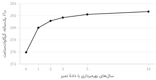
مثال 16.43 (سه سال داده، شش گیگاواتساعت P90) پرسش. بخشِ بلندمدت و P90ِ یکساله و دهساله را پس از صفر تا ده سالِ بهرهبرداری بنویسید.
پاسخ. خروجیِ بالا و شکل 16.11: بخشِ بلندمدت از 11.76 به 4.89 GWh پس از سه سال؛ P90ِ یکساله از 275.93 به 281.67؛ دهساله از 279.61 به 287.83 GWh.
تفسیر. دادهٔ بهرهبرداری قویترین شاهد است، چون همهٔ زنجیره (منحنیِ توان، دنباله، تلفها) را با هم میسنجد. به همین دلیل پروژهها اغلب پس از چند سال بازتأمینِ مالی میشوند. شرط: دادهٔ تمیز (ساعتهای قطعی، بُرش و نگهداری برچسبخورده، بخش 15.6.15) و تصحیح با مرجعِ بلندمدت؛ وگرنه یک سالِ پرباد بهاشتباه «میانگینِ تازه» میشود. این همان پلی است که فصلِ ۵۲ میسازد. وارسی: \((1/11.76^2 + 3/9.31^2)^{-1/2} = 4.89\ \text{GWh}\).
- چرا دادهٔ بهرهبرداری قویترین شاهد است؟
- دو شرطِ استفادهٔ درست از آن را بنویسید.
- چرا تغییرِ سال به سال با سالهای بهرهبرداری کم نمیشود؟
16.6.8 چیدمانِ یالی یا چیدمانِ دشت: انرژی در برابرِ اطمینان
ایده. فصلِ ۱۴ دو چیدمان را سنجید: W1 روی یال با یکپنجم انرژیِ بیشتر، و W2b در دشت نزدیکِ دکل (D-018). اما باد روی یال از دکلِ دشت پیشبینیِ متقابل با عدمِ قطعیتِ پنجبرابر دارد (7.64 در برابرِ 1.35 % تندی، A-265). کدام بدهیِ بیشتری را میپذیرد؟ (هزینهٔ بهرهبرداری یکسان فرض شده، آموزشی.)
the ridge layout W1 against W2b, one year, teaching terms A-281:
layout P50 net sigma P90 1y P99 1y debt k u case
W2b plain 295.1 15.0 275.9 260.3 79,287 P90 1y
W1 ridge 333.5 35.8 287.6 250.2 78,726 P99 1y
W1, ridge mast 333.5 17.7 310.8 292.3 93,418 P90 1y
the ridge gives a fifth more energy but carries it with an
uncertainty that the P99 case punishes: it supports less debt
than the plain until the ridge is measured, then 18 % more;
the bird survey (U-051) decides first (D-018)مثال 16.44 (بیشترین انرژی، کمترین بدهی) پرسش. P50، انحرافِ معیار، P90 و P99ِ یکساله و بدهی را برای W2b، W1 و W1 با دکلِ یالی بنویسید.
پاسخ. خروجیِ بالا: W2b: 295.1، 15.0، 275.9، 260.3، 79,287 k u؛ W1: 333.5، 35.8، 287.6، 250.2، 78,726 k u (با P99)؛ W1 با دکلِ یالی: 17.7، 310.8، 292.3، 93,418 k u.
تفسیر. W1 با 13 % انرژیِ بیشتر، کمتر بدهی میپذیرد، چون عدمِ قطعیتش P99 را زیرِ W2b میبرد. یک دکل یا لیدار روی یال (U-049، U-062) آن را 18 % بالاتر از W2b میبرد. درسِ کلی: اندازهگیری بخشی از طراحی است، نه هزینهٔ جانبی. اما تصمیم اول با بررسیِ پرنده است (U-051)؛ عددِ بدهی هیچ محدودیتِ محیطی را کنار نمیزند. وارسی: \(333.5 - 2.3263 \times 35.8 = 250.2\ \text{GWh}\).
- چرا W1 با انرژیِ بیشتر بدهیِ کمتری میپذیرد؟
- چه اقدامی این را عوض میکند و چرا؟
- چرا بدهیِ بیشتر محدودیتِ محیطی را کنار نمیزند؟
16.6.9 چند سالِ وام زیرِ P90 میافتد؟
ایده. «P90 یعنی یک سال از ده» برای یک سال درست است. اما سالهای یک پروژه یک خطای بلندمدتِ مشترک دارند: اگر میانگینِ بلندمدت را بیش از واقع برآورد کرده باشیم، همهٔ سالها پایینترند. شبیهسازیِ دویست هزار پروژهٔ پانزدهساله، یک بار با سالهای مستقل و یک بار با خطای بلندمدتی که برای هر پروژه یک بار کشیده میشود:
def years_below() -> None:
"""How many of 15 loan years fall below the one-year P90? Years are
independent only if the long-term mean is known; with the shared
long-term error drawn once per project, bad years come together."""
s = src.sigmas()
r = s["ratio"]
lt, iav = s["lt"] * r, s["iav"] * r
p50 = src.base()["net"]
p90 = p50 - 1.2816 * math.hypot(lt, iav)
rng = np.random.default_rng(172)
n = 200_000
e_ind = p50 + math.hypot(lt, iav) * rng.standard_normal((n, 15))
shared = lt * rng.standard_normal((n, 1)) # one per project
e_sh = p50 + shared + iav * rng.standard_normal((n, 15))
k_ind = (e_ind < p90).sum(axis=1)
k_sh = (e_sh < p90).sum(axis=1)years below the one-year P90 in a 15-year loan (200,000 projects):
years below independent years shared long-term error
0 20.5 % 59.6 %
1 34.3 % 13.5 %
2 26.5 % 7.3 %
3 13.0 % 4.7 %
4 4.3 % 3.3 %
5 1.1 % 2.5 %
6 or more 0.2 % 9.2 %
mean 1.51 1.49
the mean is the same, the tail is not: if the long-term mean is
lower than estimated, many years fall short together; that is
the lender's real exposure, and why the long-term part matters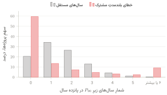
مثال 16.45 (یکونیم سال در میانگین، اما گاهی شش سال یا بیشتر) پرسش. توزیعِ شمارِ سالهای زیرِ P90 را برای دو حالت بنویسید و میانگین و دم را مقایسه کنید.
پاسخ. خروجیِ بالا و شکل 16.12: میانگین در هر دو حدودِ 1.5 سال؛ هیچ سالِ زیرِ P90: 20.5 % در برابرِ 59.6 %؛ شش سال یا بیشتر: 0.2 % در برابرِ 9.2 %.
تفسیر. با خطای مشترک، بیشترِ پروژهها هیچ سالِ بدی ندارند، اما یک پروژه از یازده پروژه شش سال یا بیشتر زیرِ P90 است: پروژههایی که میانگینشان بیش از واقع برآورد شده بود. این خطرِ واقعیِ وامدهنده است، و دلیلِ اینکه P99ِ یکساله و P90ِ دهساله هر دو نگاه میشوند، و اینکه بخشِ بلندمدت (داده، اندازهگیری) ارزش دارد. ذخیرهٔ نقدینگی (مثال 16.28) برای سالهای بدِ تکی است، نه برای چنین خطایی. وارسی: \(15 \times 0.1 = 1.5\) سال میانگین در هر دو حالت (درست).
- چرا سالهای یک پروژه مستقل نیستند؟
- چرا میانگین در دو حالت یکی است اما دم نه؟
- کدام حالت مالی این خطر را بهتر میبیند؟
16.6.10 قیمت، نسبتِ پوشش و بدهی
ایده. بیانیهٔ تولید یکی از چند ورودیِ اندازهٔ بدهی است. جدولِ دوطرفه نشان میدهد بدهی با قیمت و با نسبتِ پوششِ P90 چقدر جابهجا میشود (بقیهٔ شرطها مانندِ A-281، انحرافِ معیارِ یکسالهٔ 15.0 GWh):
debt (million u) by price and P90 cover ratio (one-year sigma 15.0 GWh):
price u/MWh 1.15 1.20 1.25 1.30 1.35
40 58.3 57.0 54.7 52.6 50.6
45 69.3 68.1 65.4 62.9 60.6
50 80.4 79.3 76.1 73.2 70.5
55 91.4 90.5 86.8 83.5 80.4
60 102.4 101.6 97.6 93.8 90.3
price moves the debt more than the cover ratio does within
these ranges: the energy statement is one input of severalمثال 16.46 (قیمت بیشتر از نسبت) پرسش. اثرِ ±10 u/MWh قیمت و ±0.10 نسبتِ پوشش را بر بدهی در نقطهٔ میانی (50 u/MWh، 1.20) مقایسه کنید.
پاسخ. خروجیِ بالا: قیمتِ 40 و 60: 57.0 و 101.6 میلیون؛ نسبتِ 1.30: 73.2؛ نقطهٔ میانی 79.3 میلیون واحد.
تفسیر. قیمت در این بازه بدهی را بسیار بیشتر از نسبتِ پوشش جابهجا میکند؛ و نسبتِ پوشش خودش پاسخِ وامدهنده به عدمِ قطعیتِ همهٔ ورودیهاست. پس بیانیهٔ تولید باید درست باشد، نه بیش از حد دقیق: تفاوتِ یک گیگاواتساعت در P90 (حدودِ 0.4 میلیون) در برابرِ تفاوتِ چند واحدِ قیمت (چند میلیون) کوچک است، اما خطای سیستماتیک در بیانیه همهٔ سالها را میبرد (مثال 16.45). در نسبتِ 1.15 حالتِ P50 تعیینکننده میشود و کاهشِ بیشترِ نسبت بدهی را بالا نمیبرد. وارسی: \(57.0\) تا \(101.6\) برای \(40\) تا \(60\): حدودِ 2.2 میلیون برای هر واحدِ قیمت.
- چرا قیمت بدهی را بیش از نسبتِ پوشش جابهجا میکند؟
- چرا در نسبتِ کم حالتِ دیگری تعیینکننده میشود؟
- چرا دقتِ زیاد در بیانیه کمارزش و درستیِ آن پرارزش است؟
16.6.11 سناریوی S1: انرژیِ کمخطر، ارزشِ پرخطر
ایده. باتریِ سناریوی S1 (مثال 15.32) انرژی را 1.6 GWh کم و ارزش را 375 k u زیاد میکرد. عدمِ قطعیتِ این دو را جدا بسنجید: تلفِ رفتوبرگشت با بازدهِ 86 ± 2 %، و ارزش با فاصلهٔ قیمتِ نیمروز و عصر ±20 % (A-283، آموزشی).
مثال 16.47 (دو دهم گیگاواتساعت، هفتاد و پنج هزار واحد) پرسش. انحرافِ معیارِ تلفِ رفتوبرگشت و ارزشِ جابهجایی را حساب کنید و با بودجهٔ انرژی مقایسه کنید.
پاسخ. P36 و P37: تلف 1.76 GWh با انحرافِ معیارِ 0.29 GWh (از \(10.82 \times 0.02 / 0.86^2\))؛ ارزش 375 ± 75 k u، یعنی 0.52 % از ارزشِ سالانه.
تفسیر. انرژیِ S1 تقریباً همان بودجهٔ S0 را دارد (0.29 در برابرِ 15 GWh)؛ اما ارزشِ باتری به قیمتها بسته است، نه به باد و آفتاب. پس بیانیهٔ تولیدِ S1 فقط سطرِ کوچکی میافزاید و ریسکِ اصلیِ باتری در مدلِ قیمت و حالتهای مالی است (فصلهای ۱۹ تا ۲۱): نمونهٔ دیگری از جدا نگه داشتنِ انرژی و پول. وارسی: \(\sqrt{15^2 + 0.29^2} = 15.003\)؛ اثرِ باتری بر عدمِ قطعیتِ انرژی ناچیز است.
- چرا عدمِ قطعیتِ انرژیِ S1 تقریباً همان S0 است؟
- ریسکِ اصلیِ ارزشِ باتری از کجا میآید؟
- انحرافِ معیارِ تلف را برای بازدهِ 86 ± 3 % حساب کنید.
16.7 نیروگاهِ P: سه مثالِ یکپارچه
سه مثال از ساده به کامل: بلوکِ خورشیدی بهتنهایی، مقایسهٔ یک مزرعهٔ بادیِ تنها با هیبرید با شرطهای مالیِ یکسان، و یادداشتِ تأمینِ مالیِ هیبرید. داده: سالِ ساختگیِ بسته (انتشارِ 1.1.0)، مدلِ 15.1 (D-019)، بودجهٔ این فصل (A-277 تا A-283)، سناریوی S0.
برنامه:
python -m companion.ch16.integratedمثال 16.48 (مقدماتی: بلوکِ خورشیدی بهتنهایی) پرسش. P90 و P99ِ یکسالهٔ انرژیِ بلوکِ خورشیدی را در ولتاژِ متوسط حساب کنید و با بودجهٔ تابشِ فصلِ ۱۲ مقایسه کنید.
the PV block alone (at MV, before the plant end):
P50 108.36 GWh; long-term 3.54 %, year-to-year 2.67 %
one year 4.44 %: P90 102.20 GWh, P99 97.18 GWh
chapter 12 gave the irradiance alone 2.8 % long-term; the PV
energy adds the conversion and loss parts on topپاسخ. بلندمدت 3.54 %، سال به سال 2.67 %، یک سال 4.44 %؛ P90 102.20 و P99 97.18 GWh.
تفسیر. انرژی از تابش نامطمئنتر است: تبدیل جزءهای خودش را دارد. اگر بلوکِ خورشیدی نیروگاهِ جدایی بود، با همین عدد ارزیابی میشد. وارسی: \(1.2816 \times 0.0444 = 0.0569\) و \(108.36 \times 0.9431 = 102.2\ \text{GWh}\).
مثال 16.49 (میانی: مزرعهٔ بادیِ تنها در برابرِ هیبرید) پرسش. با شرطهای یکسان (قیمت، نسبتها، و هزینهٔ بهرهبرداری به نسبتِ انرژیِ میانه)، بدهیِ مجاز به ازای هر گیگاواتساعتِ P50 را برای سهمِ بادیِ نیروگاه بهتنهایی و برای هیبرید مقایسه کنید.
a wind-only plant against the hybrid, same financing rules:
plant P50 GWh sigma 1y % P90 1y GWh debt k u debt per GWh
wind only 189.07 7.39 171.16 48,524 256.7 (P90 1y)
hybrid 295.14 5.08 275.93 79,287 268.6 (P90 1y)
the hybrid's smaller relative spread lets each GWh carry more
debt: part of the value of combining wind and PV is financialپاسخ. بادیِ تنها: 7.39 %، P90 171.16 GWh، 256.7 k u بدهی برای هر گیگاواتساعت؛ هیبرید: 5.08 % و 268.6 k u.
تفسیر. هر گیگاواتساعتِ هیبرید حدودِ 5 % بدهیِ بیشتری میکشد، چون توزیعِ نسبیاش باریکتر است (خورشیدی کمنوسانتر و با باد کمهمبسته). بخشی از ارزشِ هیبرید مالی است، نه فقط انرژی و اتصالِ مشترک. سهمِ بادیِ اینجا یک سادهسازی است (بادِ نیروگاهِ P در نقطهٔ اتصال)؛ مزرعهٔ بادیِ واقعیِ جدا، تلف و هزینهٔ خودش را دارد. وارسی: \(268.6 / 256.7 = 1.046\).
مثال 16.50 (یکپارچه: یادداشتِ تأمینِ مالی) پرسش. یادداشتِ کوتاهی برای کمیتهٔ سرمایهگذاری بنویسید: بیانیه، بدهی با حالتِ تعیینکننده، حالتهای جدا، هزینهٔ تضمین و موردهای باز.
financing memo, Plant P (S0), teaching terms A-281:
yield: P50 295 GWh; one-year sigma 15 GWh; P90 1y 276; P99 1y 260 GWh
ten-year P90 280 GWh (for the average over a loan)
debt sized 79,287 k u by the P90 1y case; P50 cover 1.32
separate downside cases: price, cost, availability guarantee
(lab E); a P90 delivery guarantee costs about 71 k u a year
open items: U-061 lender's cases and ratios, U-062 a second
year of measurement, U-063 correlation of the long-term
errors of wind and PVپاسخ. P50 295، عدمِ قطعیتِ یکساله 15، P90 276، P99 260 و P90ِ دهساله 280 GWh؛ بدهیِ 79,287 k u با P90ِ یکساله؛ پوششِ P50 1.32؛ حالتهای قیمت، هزینه و دسترسپذیری جدا؛ تضمینِ P90 71 k u در سال؛ سه موردِ باز.
تفسیر. یادداشت سه لایه را جدا نگه میدارد: انرژی (این فصل)، پول (شرطهای آموزشی، فصلهای ۲۰ و ۲۱) و قرارداد (چه کسی کمبود را میپردازد). هیچ عددی بی منبع نیست و هیچ عددی «تضمین» نامیده نمیشود. موردهای باز همان چیزهاییاند که وامدهنده پیش از تصمیم میپرسد. وارسی: \(79{,}287 / 9.7122 = 8{,}164\ \text{k u}\) بازپرداخت؛ \(10{,}757 / 8{,}164 = 1.32\).
16.8 گردشِ کارِ ارزیابیِ عدمِ قطعیت
۱. ورودی: مدل و بیانیهٔ P50 (فصلِ ۱۵) با پیکربندی و چکیده.
۲. ردهبندی: هر منبع در یکی از شش گروه بهاضافهٔ تغییرِ سال به سال (جدول 16.1)؛ بی شمارشِ دوباره.
۳. کمّی کردن: برای هر جزء انحرافِ معیار، شکل و شاهد؛ جزءهای تندی با نسبتِ حساسیت به انرژی.
۴. ترکیب: ریشهٔ مجموعِ مربعات با همبستگیهای نوشتهشده؛ تغییرِ سال به سال برای هر افق جدا.
۵. وارسی: مونتکارلو از مدلِ کامل، با بذرِ ثبتشده و همگرایی.
۶. سهمها: بزرگترین جزءها و ارزشِ کاهشِ هر کدام.
۷. بیانیه: مقدارها گرد، محدودیتها کنارِ عددها، قرارداد و افق صریح.
۸. رابطِ مالی: حالتهای انرژی جدا از حالتهای قیمت و هزینه و قرارداد؛ حالتها و نسبتها از وامدهنده.
۹. بازبینی: مهندسِ مستقل بودجه را جزء به جزء میسنجد؛ هر تغییر نسخهٔ تازه.
16.9 آزمایشگاههای پایتونِ این فصل
| آزمایشگاه | برنامه | آنچه میسازد |
|---|---|---|
| بودجه | sources | جزءهای بادی، خورشیدی و نیروگاه با منبع؛ تغییرِ سال به سال از فصلِ ۱۵ |
| مونتکارلو | mc | نمونهگیری از جزءها و انتهای مدلِ 15.1 |
| ردهبندی و ترکیب | examples_ab | سال به سال، حساسیت، بودجهها، همبستگی، هیبرید، شکلها، همگرایی، غیرخطی، سناریو، دقت |
| سنجهها | examples_c | جدولِ احتمالِ فزونی، افق، کجی، اطمینان، پیشبینی |
| منبعهای بیشتر | examples_f | تصحیحِ بلندمدت، روند، تخریب، دسترسپذیری، سالهای بهرهبرداری، دو چیدمان |
| سهمها، ماهها، مدلها، واحدها | examples_g | سهم از نمونهها، ماهانه و نقدینگی، فاصلهٔ دو مدل، جزءِ مشترک |
| بودجهٔ شفاف | lab_d | بودجه، مونتکارلو، سهمها، اندازهگیری، بیانیه |
| تأمینِ مالی | lab_e | حالتها، بدهی، ارزشِ اندازهگیری، حالتهای بد، تضمین، سبد |
| نیروگاهِ P | integrated | خورشیدی بهتنهایی، بادیِ تنها و هیبرید، یادداشتِ مالی |
| مثالها و پاسخها | worked | سطرهای E01 و P01 به بعد |
کتابخانهٔ همراه ماژولِ yieldrisk را میافزاید (ابزارهای عدمِ قطعیتِ اندازهگیریِ فصلهای ۲ و ۳ در uncertainty میمانند): احتمالِ فزونیِ نرمال و لگنرمال، ترکیب با ماتریسِ همبستگی، سهمِ واریانس، افقِ \(n\) ساله، نسبتِ حساسیت، نمونهگیریِ چهار شکل، صدکِ نمونه، همگرایی، ضریبِ سالواره و اندازهٔ بدهی؛ با آزمونهایی که پاسخِ دستی دارند.
کارهای آزمایشگاهی برای خواننده (هر کدام با وارسیِ پذیرش):
- در
sourcesهمبستگیِ بلندمدتِ باد و خورشیدی را 0.5 کنید؛ انحرافِ معیارِ بلندمدت باید به حدودِ 13.6 GWh در ولتاژِ متوسط برسد (مثال 16.14). - جزءِ منحنیِ توان را 3 % کنید و سهمِ آن و P90ِ یکساله را دوباره بسازید.
- در
mc.net_drawsشکلِ همهٔ جزءها را یکنواخت کنید؛ P90 باید کمی پایینتر و P99 بالاتر برود (مثال 16.12). - در
lab_eنسبتِ P90 را 1.30 کنید و ناحیههای مثال 16.38 را دوباره پیدا کنید. - بذرِ مونتکارلو را عوض کنید و نشان دهید P90 در حدودِ نوفهٔ معادلهٔ 16.5 جابهجا میشود.
16.10 ساخت و تولیدِ صنعتی در این فصل
کاربرد ندارد برای ساخت. آنچه از کارخانه به بودجه میآید شاهد است: نمونهٔ آزمونِ فلشِ ماژولها و رواداریِ توانِ برچسب (جزءِ «توانِ ماژول»، فصلِ ۴۱)، آزمونِ نوعی و منحنیِ توانِ تضمینشدهٔ توربین (فصلهای ۱۱ و ۳۹)، منحنیِ بازدهِ اینورتر (فصلِ ۹)، و آزمونهای تخریب و پایداری که نرخِ تخریب و عدمِ قطعیتش را میسازند. هرچه نمونهٔ آزمون بزرگتر و مستقلتر، جزءِ تجهیزات کوچکتر.
16.11 جعبهٔ استاندارد و انطباق
مرجعهای زیر فقط با عنوان و ویرایشِ وارسیشده آمدهاند (دفترِ استانداردها) و هیچ بند یا مقداری از آنها نقل نشده است. پذیرشِ ملیِ هیچکدام در ایران، افغانستان و تاجیکستان وارسی نشده است (فصلهای ۵۵ تا ۵۷).
- بیانِ عدمِ قطعیت: JCGM 100:2008 (راهنمای بیانِ عدمِ قطعیتِ اندازهگیری) و JCGM 101:2008 (انتشارِ توزیعها با روشِ مونتکارلو)؛ واژگان: JCGM 200:2012.
- منحنیِ توانِ توربین و عدمِ قطعیتِ آزمونش: IEC 61400-12-1:2022 (فصلهای ۱۱ و ۱۳).
- پایشِ عملکردِ سامانهٔ خورشیدی (مقایسهٔ بیانیه و تولیدِ واقعی): IEC 61724-1:2021.
- مرز: روشِ بیانیهٔ تولیدِ بانکپذیر، حالتها و نسبتهای پوشش را وامدهنده و مشاورِ فنیِ او تعیین میکنند؛ مدلِ مالیِ کامل در فصلهای ۲۰ و ۲۱.
16.12 تحویلدادنیِ نیروگاهِ P
این فصل اینها را به پروندهٔ نیروگاهِ P میافزاید:
- PLP-GEN-REP-0009، بازنگریِ A: بیانیهٔ احتمالاتیِ تولید: بودجه، مونتکارلو، سهمها، مقدارها، محدودیتها (مثال 16.32، مثال 16.36).
- PLP-GEN-CAL-0007، بازنگریِ A: مدلِ عدمِ قطعیت (برنامههای
companion/ch16، بذرها، نسخهٔ مدلِ 15.1). - کتابخانهٔ همراه: ماژولِ
yieldriskبا آزمونها. - فرضها: A-277 جزءهای آموزشیِ بادی (دنباله، چگالی، منحنیِ توان، دسترسپذیری، یخ)؛ A-278 جزءهای آموزشیِ خورشیدی و نیروگاه؛ A-279 همبستگیِ صفرِ خطاهای بلندمدتِ باد و خورشیدی و شکلهای توزیع؛ A-280 اثرِ آموزشیِ اقدامهای اندازهگیری؛ A-281 شرطهای آموزشیِ مالی (قیمت، هزینه، نرخ، مدت، نسبتها) و همبستگیِ سبد؛ A-282 رابطهٔ آموزشیِ تصحیحِ بلندمدت، روندِ آموزشی، عدمِ قطعیتِ نرخِ تخریب، مدلِ خرابیهای بزرگ و مدلِ بهروزرسانی با سالهای بهرهبرداری؛ A-283 بخشِ مشترک و هر واحدِ منحنیِ توان، ذخیرهٔ نقدینگیِ ششماهه، دو برآوردِ مستقل و عدمِ قطعیتِ بازده و فاصلهٔ قیمتِ باتری. همه فرضی یا آموزشی؛ در انتشارِ بعدیِ بستهٔ داده به دفترِ فرضها افزوده میشوند.
- مجهولها: U-061 حالتها و نسبتهای پوششِ وامدهنده؛ U-062 سالِ دومِ اندازهگیری یا کمپینِ لیدار؛ U-063 همبستگیِ خطاهای بلندمدتِ باد و خورشیدی؛ U-064 منحنیِ توانِ تضمینشده و عدمِ قطعیتِ آزمونش.
- تصمیم D-020: پایهٔ عدمِ قطعیتِ نیروگاهِ P بودجهٔ شفافِ این فصل است (نسبتِ حساسیتِ 1.82، ریشهٔ مجموعِ مربعات با همبستگیهای نوشتهشده، تغییرِ سال به سالِ فصلِ ۱۵) که با مونتکارلو وارسی شده است؛ بیانیه: P50ِ سالِ اول حدودِ 295، P90ِ یکساله حدودِ 276، P99ِ یکساله حدودِ 260 و P90ِ دهساله حدودِ 280 GWh در نقطهٔ اتصال (S0)؛ حالتهای مالی جدا از حالتهای انرژی؛ هیچ مقدارِ احتمالِ فزونی تضمین نامیده نمیشود.
- دفترِ سندها (جدول 2.18): دو ردیفِ بالا با وضعیتِ «پیشنویس، آموزشی».
16.13 جمعبندی
- یک عدد کافی نیست: انرژیِ سالِ اول توزیع دارد؛ P50 میانهٔ آن است و پهنای توزیع ارزشِ پولی دارد (بخش 16.2.1).
- دو چیزِ جدا: تغییرِ سال به سال (آینده، با میانگینِ سالها کم میشود) و عدمِ قطعیتِ بلندمدت (دانشِ ما، با دادهٔ بهتر کم میشود) (بخش 16.2.2).
- شش گروه: اندازهگیری، تصحیحِ بلندمدت، برونیابی، مدل، تجهیزات، بهرهبرداری؛ هر جزء با شاهد؛ جزءهای تندی ضربِ نسبتِ حساسیتِ 1.82 (بخش 16.2.3).
- ترکیب: ریشهٔ مجموعِ مربعات برای جزءهای مستقل، معادلهٔ 16.4 با همبستگی؛ P90ها جمعپذیر نیستند؛ مونتکارلو وارسی میکند (بخش 16.3).
- سنجهها: \(P_p = P_{50}(1 - z_p u)\)؛ افقِ یک سال و چند سال؛ شکل در دم مهم است؛ خودِ P90 بازهٔ اطمینان دارد؛ مهارتِ پیشبینی عدمِ قطعیتِ تولید نیست (بخش 16.4).
- نیروگاهِ P: یکساله 15 GWh (5.1 %)؛ P90 حدودِ 276، P99 حدودِ 260، P90ِ دهساله حدودِ 280 GWh؛ پنج جزء نود درصدِ واریانس (مثال 16.32).
- تأمینِ مالی: حالتهای انرژی جدا از قیمت، هزینه و قرارداد؛ حالتِ تعیینکننده بدهی را میسازد؛ P90 تضمین نیست (بخش 16.6).
16.13.1 واژگانِ فصلِ ۱۶
| فارسی | انگلیسی | یادداشت |
|---|---|---|
| عدمِ قطعیتِ استاندارد | standard uncertainty | |
| بودجهٔ عدمِ قطعیت | uncertainty budget | |
| تغییرِ سال به سال | inter-annual variability | IAV |
| عدمِ قطعیتِ بلندمدت | long-term uncertainty | |
| احتمالِ فزونی | probability of exceedance | P50, P90, P99 |
| نسبتِ حساسیتِ انرژی | energy sensitivity ratio | |
| ریشهٔ مجموعِ مربعات | root sum of squares | RSS |
| ماتریسِ همبستگی | correlation matrix | |
| سهمِ واریانس | variance share | |
| توزیعِ لگنرمال | lognormal distribution | |
| توزیعِ یکنواخت، مثلثی | uniform, triangular distribution | |
| نمونهگیریِ مونتکارلو | Monte Carlo sampling | |
| همگرایی | convergence | |
| بذرِ تصادفی | random seed | |
| اثرِ غیرخطی | non-linear effect | |
| سناریو | scenario | |
| دقتِ دروغین | false precision | |
| افق | horizon (years averaged) | |
| بازهٔ اطمینان | confidence interval | |
| میانه، میانگین | median, mean | |
| پیشبینیِ متقابل | cross-prediction | |
| برونیابی | extrapolation | |
| شاهد | evidence | |
| بیانیهٔ احتمالاتیِ تولید | probabilistic yield statement | |
| حالتِ مالی | financing case | |
| حالتِ تعیینکننده | binding case | |
| جریانِ نقدِ آزاد برای بازپرداخت | cash flow available for debt service | CFADS |
| نسبتِ پوششِ بدهی | debt service coverage ratio | DSCR |
| ضریبِ سالواره | annuity factor | |
| اندازهٔ بدهی | debt sizing | |
| حالتِ بد | downside case | |
| تضمینِ تحویل | delivery guarantee | |
| سبدِ نیروگاهها | portfolio | |
| مشاورِ فنیِ وامدهنده | lender’s technical advisor | |
| محدودیتهای بیانیه | limitations of a statement |
16.14 ارزیابیِ پلکانی
معیارِ تسلطِ این فصل: خواننده میتواند منبع، فرضهای تلف، عدمِ قطعیت و محدودیتهای یک برآوردِ تولید را توضیح دهد؛ بودجهٔ شفاف بسازد و با مونتکارلو بیازماید؛ مقدارهای احتمالِ فزونی را برای افقِ درست تفسیر کند؛ و حالتهای مالیِ جدا را بی آنکه P90 را تضمین بداند بسازد. پاسخها در بخش 16.15 آمدهاند.
16.14.1 پلهٔ ۱: مبانی
تمرین 16.1 P90ِ 200 GWh با 6 % عدمِ قطعیت چیست؟
تمرین 16.2 P99ِ همان چیست؟
تمرین 16.3 P75ِ همان چیست؟
تمرین 16.4 ترکیبِ مستقلِ 2، 3 و 6 % چیست؟
تمرین 16.5 ترکیبِ کاملاً همبستهٔ همان سه چیست؟
تمرین 16.6 ترکیبِ دو 5 % با همبستگیِ 0.3 چیست؟
تمرین 16.7 همان با همبستگیِ −0.3؟
تمرین 16.8 3 % خطای تندی با نسبتِ حساسیتِ 1.82 چند درصد انرژی است؟
تمرین 16.9 عدمِ قطعیتِ میانگینِ چهار سال با بلندمدتِ 4 % و سال به سالِ 5 % چیست؟
تمرین 16.10 همان برای بیستوپنج سال؟
تمرین 16.11 سهمِ واریانسِ جزءهای 1، 2 و 2 را بنویسید.
تمرین 16.12 ضریبِ سالوارهٔ 8 % و دوازده سال چیست؟
تمرین 16.13 بدهی برای 8,000 k u با نسبتِ 1.25، 6 % و پانزده سال چیست؟
تمرین 16.14 جریانِ نقدِ 280 GWh با 50 u/MWh و هزینهٔ 4,000 k u چیست؟
تمرین 16.15 احتمالِ دستکم یک سالِ زیرِ P90 در پانزده سال چیست؟
تمرین 16.16 نوفهٔ P90ِ مونتکارلو با هزار نمونه و انحرافِ معیارِ 15 GWh چیست؟
تمرین 16.17 انحرافِ معیارِ توزیعِ یکنواخت با نیمپهنای 2 % چیست؟
تمرین 16.18 انحرافِ معیارِ توزیعِ مثلثی با نیمپهنای 3 % چیست؟
تمرین 16.19 نسبتِ P90 به P50 با 5.1 % چیست؟
تمرین 16.20 \(z\) برای P90، P95 و P99 را بنویسید.
تمرین 16.21 P90 را تعریف کنید.
تمرین 16.22 تغییرِ سال به سال و عدمِ قطعیتِ بلندمدت را تعریف کنید.
تمرین 16.23 شش گروهِ عدمِ قطعیت را نام ببرید.
تمرین 16.24 نسبتِ حساسیتِ انرژی را تعریف کنید.
تمرین 16.25 حالتِ تعیینکننده را تعریف کنید.
تمرین 16.26 عدمِ قطعیتِ تصحیحِ بلندمدت را با دوازده ماه و همبستگیِ 0.80 حساب کنید.
تمرین 16.27 روندِ −0.05 % تندی در سال در هفده و نیم سال چه اثری بر انرژی دارد؟
تمرین 16.28 انحرافِ معیارِ انرژیِ خورشیدیِ سالِ بیستم از نرخِ تخریب چیست؟
تمرین 16.29 احتمالِ اینکه هیچیک از دوازده توربین با احتمالِ 4 % خرابیِ بزرگ نداشته باشد چیست؟
تمرین 16.30 بخشِ بلندمدت پس از سه سالِ بهرهبرداری با معادلهٔ 16.12 چیست؟
تمرین 16.31 P90ِ 295 GWh با انحرافِ معیارِ 12 GWh چیست؟
تمرین 16.32 ارزشِ هر گیگاواتساعتِ P90 با نسبتِ 1.25 چیست؟
تمرین 16.33 زمانِ انتظاریِ خرابیهای بزرگ را برای مدلِ مثال 16.11 حساب کنید.
تمرین 16.34 معادلهٔ 16.6 را برای بخشِ مشترکِ 2 %، بخشِ هر واحدِ 3 % و دوازده توربین حساب کنید.
تمرین 16.35 قسطِ ماهانهٔ وامِ 79,287 k u با 6 % و پانزده سال چیست؟
تمرین 16.36 نقطهٔ سربهسرِ ماهانه با قسطِ 680، هزینهٔ 333 k u و 50 u/MWh چیست؟
تمرین 16.37 شمارِ مؤثرِ سالها را برای ده سال و \(r_1 = 0.2\) حساب کنید.
تمرین 16.38 ترکیبِ 300 ± 10 و 290 ± 10 GWh با خطاهای مستقل چیست؟
تمرین 16.39 چهار برچسبِ هر عددِ تولید را بنویسید.
تمرین 16.40 عددِ 301.5 GWh در کدام مرز است؟
تمرین 16.41 قسطِ سالانهٔ وامِ 79.3 میلیون با 6 % و پانزده سال چیست؟
تمرین 16.42 میانگینِ سالهای زیرِ P90 در پانزده سال چیست؟
تمرین 16.43 انحرافِ معیارِ تلفِ رفتوبرگشتِ S1 با بازدهِ 86 ± 2 % چیست؟
تمرین 16.44 ارزشِ جابهجاییِ 375 k u با فاصلهٔ قیمتِ ±20 % چه انحرافی دارد؟
تمرین 16.45 برنامهٔ sensitivity_ratio چه میکند؟
تمرین 16.46 برنامهٔ convergence برای هر شمارِ نمونه چه میدهد؟
16.14.2 پلهٔ ۲: تحلیل
تمرین 16.47 عدمِ قطعیتِ بلندمدتِ بادی و خورشیدی و سهمِ بزرگترین جزءهایشان را بنویسید.
تمرین 16.48 نسبتِ حساسیتِ مزرعه را برای افزایش و کاهشِ 5 % بنویسید.
تمرین 16.49 انحرافِ معیارِ یک سال و میانگینِ بیستساله را برای باد بنویسید.
تمرین 16.50 اثرِ همبستگی از −0.5 تا 1 بر P90ِ بلندمدت چیست؟
تمرین 16.51 P90ِ هیبرید و جمعِ P90ها را مقایسه کنید.
تمرین 16.52 ضریبهای P90 و P99ِ چهار شکل را بنویسید.
تمرین 16.53 پراکندگیِ برآوردِ P90 را برای صد و ده هزار نمونه بنویسید.
تمرین 16.54 P90ِ مونتکارلو و خطی را برای بلوکِ 80 MW بنویسید.
تمرین 16.55 چهار سناریو را با P90 مقایسه کنید.
تمرین 16.56 اثرِ ±20 % خطا در انحرافِ معیار بر P90 چیست؟
تمرین 16.57 جدولِ احتمالِ فزونی را برای یک و ده سال بنویسید.
تمرین 16.58 P90 را برای یک، ده و بیستوپنج سال بنویسید.
تمرین 16.59 P90ِ نرمال و لگنرمال را برای 20 % بنویسید.
تمرین 16.60 بازهٔ اطمینانِ P90 را بنویسید.
تمرین 16.61 خطای ساعتیِ پیشبینی و عدمِ قطعیتِ یکسالهٔ تولید را مقایسه کنید.
تمرین 16.62 عدمِ قطعیتِ بلندمدت، یکساله و دهساله را در ولتاژِ متوسط بنویسید.
تمرین 16.63 P90ِ تحلیلی و مونتکارلو را مقایسه کنید.
تمرین 16.64 اثرِ نصف کردنِ تصحیحِ بلندمدتِ بادی را بنویسید.
تمرین 16.65 اثرِ سه اقدامِ اندازهگیری را بنویسید.
تمرین 16.66 بدهیِ هر حالت را بنویسید و تعیینکننده را نام ببرید.
تمرین 16.67 بدهی را برای عدمِ قطعیتِ 3 تا 8 % بنویسید.
تمرین 16.68 ارزشِ هر گیگاواتساعتِ P90 را حساب کنید.
تمرین 16.69 پوشش را در شش حالتِ بد بنویسید.
تمرین 16.70 هزینهٔ انتظاریِ تضمینِ P90 را حساب کنید.
تمرین 16.71 عدمِ قطعیتِ سبدِ دو نیروگاه را برای سه همبستگی بنویسید.
تمرین 16.72 P90ِ بلوکِ خورشیدی بهتنهایی را بنویسید.
تمرین 16.73 بدهی به ازای هر گیگاواتساعت را برای بادیِ تنها و هیبرید مقایسه کنید.
تمرین 16.74 احتمالِ دو سال یا بیشتر زیرِ P90 در ده سال چیست؟
تمرین 16.75 ترکیبِ 2.26 و 3.44 % را حساب کنید.
تمرین 16.76 دو راهِ کاهشِ عدمِ قطعیتِ تصحیحِ بلندمدت را با عدد مقایسه کنید.
تمرین 16.77 اثرِ روندِ آموزشی بر انرژیِ بادی را بنویسید.
تمرین 16.78 رشدِ عدمِ قطعیتِ خورشیدی با سال را بنویسید.
تمرین 16.79 P99ِ دسترسپذیری را با نرمال مقایسه کنید.
تمرین 16.80 P90ِ یکساله را پس از صفر، سه و ده سالِ بهرهبرداری بنویسید.
تمرین 16.81 P99ِ یکسالهٔ W1 را حساب کنید.
تمرین 16.82 بدهیِ W1 با دکلِ یالی را با W2b مقایسه کنید.
تمرین 16.83 بدهیِ سه چیدمان را با حالتِ تعیینکننده بنویسید.
تمرین 16.84 هفت سهمِ بزرگ را از نمونههای مونتکارلو بنویسید.
تمرین 16.85 فاصلهٔ دو مدل را با جزءهای مدلِ بودجه مقایسه کنید.
تمرین 16.86 کمترین و بیشترین ماه و جمعِ P90های ماهانه را بنویسید.
تمرین 16.87 ماههای کمتر از قسط در بیست سال چندتاست؟
تمرین 16.88 \(r_1\)ِ بیست سالِ بادی و شمارِ مؤثرِ سالها را بنویسید.
تمرین 16.89 دو برآورد را با همبستگیِ صفر و 0.5 ترکیب کنید.
تمرین 16.90 هفت عددِ تولیدِ نیروگاهِ P را با برچسب بنویسید.
تمرین 16.91 خطای استانداردِ \(r_1\) از بیست مقدار چیست؟
تمرین 16.92 سهمِ پروژههای بی سالِ زیرِ P90 و با شش سال یا بیشتر را در دو حالت بنویسید.
تمرین 16.93 بدهی را برای قیمتهای 40 و 60 u/MWh با نسبتِ 1.20 بنویسید.
تمرین 16.94 اثرِ نسبتِ پوششِ 1.30 بهجای 1.20 بر بدهی در قیمتِ 50؟
تمرین 16.95 در کدام نسبت حالتِ P50 تعیینکننده میشود؟
تمرین 16.96 عدمِ قطعیتِ انرژیِ S1 را با S0 مقایسه کنید.
تمرین 16.97 نسبتِ حساسیت را برای +5 % و −5 % تندی مقایسه کنید و ناهمسانی را توضیح دهید.
16.14.3 پلهٔ ۳: کاربرد
تمرین 16.98 وامدهنده میپرسد چرا P90ِ هیبرید از جمعِ P90ها بیشتر است. پاسخ دهید.
تمرین 16.99 یک گزارش P90 را 275.93 GWh نوشته است. چه اصلاحی پیشنهاد میکنید؟
تمرین 16.100 یک مشاور برای P90ِ دهساله تغییرِ سال به سال را کامل گذاشته است. اثر؟
تمرین 16.101 خریدار میخواهد P90 را در قرارداد تضمین کنید. چه میگویید؟
تمرین 16.102 مدیر میخواهد با نمونهٔ بیشترِ مونتکارلو P90 را «دقیقتر» کند. پاسخ دهید.
تمرین 16.103 یک فروشندهٔ پیشبینی میگوید خطای ساعتیِ کم یعنی P90ِ بالاتر. پاسخ دهید.
تمرین 16.104 هر دو ارزیابیِ باد و خورشیدی با یک مرجعِ بازتحلیل انجام شدهاند. چه تغییری در بودجه میدهید؟
تمرین 16.105 سرمایهگذار میپرسد آیا سالِ دومِ دکل ارزش دارد. چه حسابی میکنید؟
تمرین 16.106 یک مدلساز منحنیِ توان را بی عدمِ قطعیت گذاشته است. اثر؟
تمرین 16.107 وامدهنده «P90 بهاضافهٔ سالِ کمباد» را حالتِ پایه گذاشته است. پاسخ دهید.
تمرین 16.108 بهرهبردار پس از سالِ نخست 3 % زیرِ P50 است. آیا بیانیه نادرست بود؟
تمرین 16.109 یک گزارش توزیعِ یکنواخت را برای همهٔ جزءها گذاشته است. اثر بر P99؟
تمرین 16.110 نیروگاه با بلوکِ خورشیدیِ 100 MW و بُرشِ 4 % ساخته میشود. روشِ عدمِ قطعیت را عوض میکنید؟
تمرین 16.111 مالکِ دو نیروگاهِ همجوار میخواهد سبد را با جمعِ P90ها گزارش کند. پاسخ دهید.
تمرین 16.112 یک گزارش روندِ اقلیمی را نادیده گرفته است. کجا و چگونه گفته میشود؟
تمرین 16.113 مالک میخواهد پیش از تأمینِ مالی یک سالِ دیگر اندازه بگیرد. چه چیزهایی را میسنجید؟
تمرین 16.114 یک مقالهٔ علمی روندِ کاهشیِ باد را گزارش کرده است. در بیانیه چه میکنید؟
تمرین 16.115 وامدهنده دسترسپذیریِ P99 را نرمال گرفته است. اثر؟
تمرین 16.116 پس از دو سالِ پرباد، مالک میخواهد P50 را بالا ببرد. پاسخ دهید.
تمرین 16.117 سرمایهگذار W1 را به سببِ انرژیِ بیشتر میخواهد. پاسخ دهید.
تمرین 16.118 قراردادِ نگهداری زمانِ تعمیرِ خرابیِ بزرگ را تضمین نمیکند. اثر بر بودجه؟
تمرین 16.119 بازبین مدلِ شما را 6 % پایینتر یافته است. با جزءهای مدل چه نتیجهای میگیرید؟
تمرین 16.120 وامدهنده ذخیرهٔ نقدینگی را از P90ِ سالانه سنجیده است. پاسخ دهید.
تمرین 16.121 سازنده عدمِ قطعیتِ منحنیِ توانِ یک توربین را 3.6 % داده است. در بودجهٔ مزرعه چه میگذارید؟
تمرین 16.122 مالک «تولیدِ سالانهٔ 301.5 GWh» را در دفترچهٔ سرمایهگذار نوشته است. چه اصلاحی لازم است؟
تمرین 16.123 دو مشاور با یک داده و یک نرمافزار دو برآورد دادهاند و مالک میانگین گرفته است. پاسخ دهید.
تمرین 16.124 یک گزارش با \(r_1\) منفی عدمِ قطعیتِ دهساله را کم کرده است. پاسخ دهید.
تمرین 16.125 یک وامدهنده عددِ میانگینِ بیستوپنجساله را برای قسطِ سالِ اول به کار برده است. اثر؟
تمرین 16.126 وامدهنده میگوید «در پانزده سال حدودِ یکونیم سالِ بد داریم، ذخیره کافی است». پاسخ دهید.
تمرین 16.127 مالک میخواهد برای یک گیگاواتساعت P90ِ بیشتر هزینهٔ زیادی بدهد، اما قیمتِ قرارداد هنوز مذاکره نشده است. چه میگویید؟
تمرین 16.128 سرمایهگذار میپرسد باتری عدمِ قطعیتِ تولید را زیاد میکند؟ پاسخ دهید.
تمرین 16.129 یک مدلساز نسبتِ حساسیتِ یک توربین را برای مزرعه به کار برده است. اثر؟
16.14.4 پلهٔ ۴: طراحی و راستیآزمایی
تمرین 16.130 بودجهٔ عدمِ قطعیت را با ستونهایش برای یک نیروگاهِ هیبریدی طراحی کنید.
تمرین 16.131 آزمونی برای combine بنویسید که همبستگیِ کامل را بسنجد.
تمرین 16.132 روشِ مونتکارلو با بذر، همگرایی و وارسی طراحی کنید.
تمرین 16.133 مجموعهٔ سناریوهای نامدار برای یک وامدهنده طراحی کنید.
تمرین 16.134 الگوی بیانیهٔ احتمالاتیِ تولید را بنویسید.
تمرین 16.135 برنامهٔ کاهشِ عدمِ قطعیت با هزینه و زمان طراحی کنید.
تمرین 16.136 رابطِ مدلِ تولید و مدلِ مالی را تعریف کنید.
تمرین 16.137 روشِ برآوردِ همبستگیِ خطاهای باد و خورشیدی را طراحی کنید.
تمرین 16.138 بازبینیِ مستقلِ بودجه را با فهرستِ پرسشها طراحی کنید.
تمرین 16.139 گزارشِ مقایسهٔ تولیدِ واقعی با توزیع را برای سالهای بهرهبرداری طراحی کنید.
تمرین 16.140 روشی برای برآوردِ عدمِ قطعیتِ تصحیحِ بلندمدت با دادهٔ واقعی طراحی کنید.
تمرین 16.141 بودجهٔ سریِ طولِ عمر (نه فقط سالِ اول) را طراحی کنید.
تمرین 16.142 روشِ بازارزیابیِ تولید پس از سه سالِ بهرهبرداری را طراحی کنید.
تمرین 16.143 قالبِ «برچسبِ عدد» را برای همهٔ گزارشهای نیروگاه طراحی کنید.
تمرین 16.144 روشِ گرفتنِ «نظرِ دوم» را طوری طراحی کنید که مستقل باشد.
تمرین 16.145 جدولِ حساسیتِ بدهی (قیمت، نسبت، انحرافِ معیار) را برای کمیتهٔ سرمایهگذاری طراحی کنید.
16.14.5 پلهٔ ۵: تسلط
تمرین 16.146 بیانیهٔ نیروگاهِ P را در برابرِ مهندسِ مستقل دفاع کنید.
تمرین 16.147 استدلال کنید چرا P90 نه تضمین است و نه ارزیابیِ کاملِ ریسک.
تمرین 16.148 نشان دهید بخشی از ارزشِ هیبرید مالی است.
تمرین 16.149 بیست جزء را به پنج جزءِ اصلی برسانید و بگویید بودجه چه چیزی را از دست میدهد.
تمرین 16.150 خلاصهٔ دفاعِ فصلِ ۱۶ را برای پروژهٔ پایانی آماده کنید: سه تصمیم، سه شاهد، سه ریسکِ باز.
تمرین 16.151 یک گزارشِ تولیدِ ساختگی با پنج خطای این فصل بنویسید و آنها را نشان دهید.
تمرین 16.152 نشان دهید چرا «اندازهگیری بخشی از طراحی است» با عددهای این فصل.
تمرین 16.153 نشان دهید چرا بخشِ بلندمدتِ عدمِ قطعیت برای وامدهنده از تغییرِ سال به سال خطرناکتر است.
16.15 پاسخنامه و راهحلها
پاسخهای عددی را برنامهٔ worked میسازد (سطرهای P01 به بعد در بخش 16.15.1). برای مسئلههای طراحی و تسلط، معیارهای پاسخ آمدهاند.
حل. تمرین 16.1. 184.62 GWh (P01).
حل. تمرین 16.2. 172.08 GWh (P02).
حل. تمرین 16.3. 191.91 GWh (P03).
حل. تمرین 16.4. 7.0 % (P04).
حل. تمرین 16.5. 11 % (P05).
حل. تمرین 16.6. 8.06 % (P06).
حل. تمرین 16.7. 5.92 % (P07).
حل. تمرین 16.8. 5.46 % (P08).
حل. تمرین 16.9. 4.72 % (P09).
حل. تمرین 16.10. 4.12 % (P10).
حل. تمرین 16.11. 0.11، 0.44، 0.44 (P11).
حل. تمرین 16.12. 7.5361 (P13).
حل. تمرین 16.13. 62,158 k u (P14).
حل. تمرین 16.14. 10,000 k u (P15).
حل. تمرین 16.15. 0.794 (P17).
حل. تمرین 16.16. حدودِ 0.81 GWh (P18).
حل. تمرین 16.17. 1.15 % (P20).
حل. تمرین 16.18. 1.22 % (P21).
حل. تمرین 16.19. 0.9346 (P22).
حل. تمرین 16.20. 1.2816، 1.6449، 2.3263 (E01).
حل. تمرین 16.21. مقداری که با احتمالِ 0.9 فزونی مییابد؛ صدکِ دهم (بخش 16.4.1).
حل. تمرین 16.22. بخش 16.2.2.
حل. تمرین 16.23. جدول 16.1.
حل. تمرین 16.24. معادلهٔ 16.1.
حل. تمرین 16.25. حالتی که کمترین بدهی را میپذیرد (بخش 16.6.1).
حل. تمرین 16.26. 1.90 % (P26).
حل. تمرین 16.27. −1.59 % (P27).
حل. تمرین 16.28. 4.36 GWh (P28).
حل. تمرین 16.29. 0.613 (P29).
حل. تمرین 16.30. 4.89 GWh (P30).
حل. تمرین 16.31. 279.6 GWh (P34).
حل. تمرین 16.32. 388 k u (P35).
حل. تمرین 16.33. 28.8 توربینروز، 0.66 % (P33).
حل. تمرین 16.34. 2.18 % (مثال 16.22).
حل. تمرین 16.35. 680 k u (مثال 16.28).
حل. تمرین 16.36. 20.3 GWh (مثال 16.28).
حل. تمرین 16.37. 6.67 (معادلهٔ 16.9).
حل. تمرین 16.38. 295 ± 7.1 GWh (معادلهٔ 16.10).
حل. تمرین 16.39. مرز، سال یا افق، سناریو، آماره (جدول 16.3).
حل. تمرین 16.40. ولتاژِ متوسط (جدول 16.3).
حل. تمرین 16.41. حدودِ 8.16 میلیون (مثال 16.37).
حل. تمرین 16.42. 1.5 (مثال 16.45).
حل. تمرین 16.43. 0.29 GWh (P36).
حل. تمرین 16.44. ±75 k u (P37).
حل. تمرین 16.45. همهٔ تندیها را یک درصد بالا میبرد و تغییرِ نسبیِ انرژی را تقسیم بر یک درصد میدهد (بخش 16.2.6).
حل. تمرین 16.46. میانگین و پراکندگیِ برآوردِ صدک در چند تکرار (بخش 16.3.6).
حل. تمرین 16.47. 5.85 و 3.54 %؛ تصحیحِ بلندمدتِ بادی 44.6 %، حسگرِ خورشیدی 39.9 % (بخش 16.2.4).
حل. تمرین 16.48. 1.79 و 1.85 (مثال 16.6).
حل. تمرین 16.49. 4.5 و 1.0 % (مثال 16.2).
حل. تمرین 16.50. 288.73 تا 282.08 GWh (مثال 16.14).
حل. تمرین 16.51. 281.93 و 277.04 GWh (مثال 16.15).
حل. تمرین 16.52. مثال 16.12.
حل. تمرین 16.53. 2.67 و 0.25 GWh (مثال 16.16).
حل. تمرین 16.54. 334.28 و 334.06 GWh (مثال 16.17).
حل. تمرین 16.55. مثال 16.18: با هم 274.56 در برابرِ 275.93 GWh.
حل. تمرین 16.56. ±3.8 GWh (مثال 16.19).
حل. تمرین 16.57. مثال 16.23 و خروجیِ بخش 16.4.1.
حل. تمرین 16.58. 275.93، 279.61، 279.89 GWh (مثال 16.24).
حل. تمرین 16.59. 74.37 و 79.16 (مثال 16.25).
حل. تمرین 16.60. 270.96 تا 281.13 GWh (مثال 16.26).
حل. تمرین 16.61. 31 % و 5.1 % (مثال 16.27).
حل. تمرین 16.62. 12.01، 15.32 و 12.38 GWh (مثال 16.32).
حل. تمرین 16.63. 275.93 و 276.19 GWh (مثال 16.33).
حل. تمرین 16.64. +1.84 GWh (مثال 16.34).
حل. تمرین 16.65. +0.91، +0.61، +0.04؛ با هم +1.59 GWh (مثال 16.35).
حل. تمرین 16.66. 80,365، 79,287، 83,369 k u؛ P90ِ یکساله (مثال 16.37).
حل. تمرین 16.67. مثال 16.38.
حل. تمرین 16.68. 405 k u (P24).
حل. تمرین 16.69. مثال 16.40.
حل. تمرین 16.70. 71 k u در سال (P25).
حل. تمرین 16.71. 3.59، 3.92، 4.17 % (مثال 16.42).
حل. تمرین 16.72. 102.20 GWh (مثال 16.48).
حل. تمرین 16.73. 256.7 و 268.6 k u (مثال 16.49).
حل. تمرین 16.74. 0.264 (P16).
حل. تمرین 16.75. 4.12 % (P23).
حل. تمرین 16.76. 1.45 و 1.48 %؛ با هم 1.18 % (مثال 16.8).
حل. تمرین 16.77. −3.08 GWh در سال (مثال 16.9).
حل. تمرین 16.78. 3.84 تا 6.41 GWh (مثال 16.10).
حل. تمرین 16.79. 95.03 و 95.99 % (مثال 16.11).
حل. تمرین 16.80. 275.93، 281.67، 282.67 GWh (مثال 16.43).
حل. تمرین 16.81. 250.2 GWh (P31).
حل. تمرین 16.82. 1.178 (P32).
حل. تمرین 16.83. مثال 16.44.
حل. تمرین 16.84. مثال 16.20.
حل. تمرین 16.85. 5.91 در برابرِ 2.95 GWh؛ 1.4 برابرِ انحرافِ معیارِ فاصله (مثال 16.21).
حل. تمرین 16.86. نوامبر و مه؛ 288.39 GWh (مثال 16.28).
حل. تمرین 16.87. 33 از ۲۴۰ (مثال 16.28).
حل. تمرین 16.88. −0.21 و 15.3؛ اما با صفر سازگار (مثال 16.29).
حل. تمرین 16.89. 292.3 ± 9.4 و 293.0 ± 11.3 GWh (مثال 16.30).
حل. تمرین 16.90. جدول 16.3.
حل. تمرین 16.91. حدودِ \(1/\sqrt{20} = 0.22\) (مثال 16.29).
حل. تمرین 16.92. 20.5 و 0.2 %؛ 59.6 و 9.2 % (مثال 16.45).
حل. تمرین 16.93. 57.0 و 101.6 میلیون (مثال 16.46).
حل. تمرین 16.94. 73.2 در برابرِ 79.3 میلیون (مثال 16.46).
حل. تمرین 16.95. حدودِ 1.15 و کمتر (مثال 16.46).
حل. تمرین 16.96. 15.003 در برابرِ 15 GWh؛ ناچیز (مثال 16.47).
حل. تمرین 16.97. 1.79 و 1.85؛ کمبود بیشتر میکاهد (مثال 16.6).
حل. تمرین 16.98. معیار: احتمالِ همزمانیِ دو سالِ بد، معادلهٔ 16.4، مثال 16.15.
حل. تمرین 16.99. معیار: گرد کردن، عدمِ قطعیتِ انحرافِ معیار (مثال 16.19).
حل. تمرین 16.100. معیار: معادلهٔ 16.8؛ P90 زیادی پایین.
حل. تمرین 16.101. معیار: یک سال از ده، هزینهٔ انتظاری و دم، چه کسی میپردازد (مثال 16.41).
حل. تمرین 16.102. معیار: نوفه در برابرِ اطمینان به ورودیها (مثال 16.26).
حل. تمرین 16.103. معیار: مثال 16.27.
حل. تمرین 16.104. معیار: همبستگیِ مثبت، حساسیت با \(r = 0.5\) (مثال 16.14).
حل. تمرین 16.105. معیار: +0.91 GWh، 405 k u برای هر گیگاواتساعت، هزینه و تأخیر (مثال 16.39).
حل. تمرین 16.106. معیار: سهمِ 6.4 % حذف، P90 خوشبینانه؛ منحنیِ تضمینشده (U-064).
حل. تمرین 16.107. معیار: دوبارهشماریِ تغییرِ سال به سال (مثال 16.18).
حل. تمرین 16.108. معیار: درونِ بازه؛ تفکیکِ علت (بخش 15.5.4).
حل. تمرین 16.109. معیار: P99ِ خوشبینانه (مثال 16.12).
حل. تمرین 16.110. معیار: مونتکارلو از مدلِ کامل (بخش 16.3.7).
حل. تمرین 16.111. معیار: مثال 16.42.
حل. تمرین 16.112. معیار: محدودیتها، حساسیت (بخش 16.4.7).
حل. تمرین 16.113. معیار: مثال 16.8، مثال 16.39، تأخیر.
حل. تمرین 16.114. معیار: همگنیِ شاهد، P50 یا جزء یا سناریو (مثال 16.9).
حل. تمرین 16.115. معیار: یک درصد خوشبینانه (مثال 16.11).
حل. تمرین 16.116. معیار: تصحیح با مرجع، معادلهٔ 16.12، دادهٔ تمیز.
حل. تمرین 16.117. معیار: مثال 16.44؛ دکلِ یالی؛ بررسیِ پرنده.
حل. تمرین 16.118. معیار: دمِ دسترسپذیری، P99 (بخش 16.2.11).
حل. تمرین 16.119. معیار: 6 % حدودِ شش برابرِ فاصلهٔ عادی؛ جزءهای مدل کوچکاند؛ پل (مثال 16.21).
حل. تمرین 16.120. معیار: دادهٔ ماهانه، فصلی بودن (مثال 16.28).
حل. تمرین 16.121. معیار: بخشِ مشترک و هر واحد، معادلهٔ 16.6.
حل. تمرین 16.122. معیار: مرز، سال، سناریو، آماره (مثال 16.31).
حل. تمرین 16.123. معیار: همبستگیِ خطا، سودِ اندک (مثال 16.30).
حل. تمرین 16.124. معیار: بیست مقدار، سازگار با صفر، احتیاط (مثال 16.29).
حل. تمرین 16.125. معیار: سالِ اول بالاتر؛ سریِ سالانه (جدول 16.3).
حل. تمرین 16.126. معیار: خطای مشترک، دمِ شش سال یا بیشتر (مثال 16.45).
حل. تمرین 16.127. معیار: مثال 16.46، اولویتِ ورودیها.
حل. تمرین 16.128. معیار: انرژی نه، ارزش آری (مثال 16.47).
حل. تمرین 16.129. معیار: 1.60 بهجای 1.82، بودجهٔ بادیِ کوچکتر (مثال 16.6).
حل. تمرین 16.130. معیار: جزء، گروه، فناوری، انحرافِ معیار، شکل، شاهد، منبع، همبستگی.
حل. تمرین 16.131. معیار: جمعِ خطی، \(r = 0\)، ماتریسِ متقارن.
حل. تمرین 16.132. معیار: بخش 16.3.5، معادلهٔ 16.5.
حل. تمرین 16.133. معیار: سالِ بد، قطعی، دسترسپذیری، قیمت، بی دوبارهشماری.
حل. تمرین 16.134. معیار: مقدارها، افق، قرارداد، سهمها، محدودیتها، نسخه.
حل. تمرین 16.135. معیار: سهم، اثرِ نصف کردن، ارزشِ پولی، تأخیر.
حل. تمرین 16.136. معیار: حالتهای انرژی، افق، سریِ سالانه، تخریب، حالتهای جدا (فصلهای ۲۰ و ۲۱).
حل. تمرین 16.137. معیار: مرجعهای مشترک، مقایسه با نیروگاههای در حالِ کار، حساسیت.
حل. تمرین 16.138. معیار: شاهدِ هر سطر، دوبارهشماری، شکل، همبستگی، نسخه.
حل. تمرین 16.139. معیار: بازه، صدکِ هر سال، بهروزرسانیِ بودجه (فصلهای ۵۰ و ۵۲).
حل. تمرین 16.140. معیار: پسماندها، ماههای همبسته، اعتبارسنجیِ متقابل، مرجعهای چندگانه.
حل. تمرین 16.141. معیار: تخریبِ همبسته، دسترسپذیری با سن، افقِ وام.
حل. تمرین 16.142. معیار: دادهٔ تمیز، تصحیح با مرجع، معادلهٔ 16.12، بودجهٔ تازه (فصلِ ۵۲).
حل. تمرین 16.143. معیار: مرز، سال، سناریو، آماره، نسخهٔ مدل، تاریخ.
حل. تمرین 16.144. معیار: دادهٔ دیگر، مدلِ دیگر، تیمِ دیگر، پل.
حل. تمرین 16.145. معیار: محورها، نقطهٔ میانی، حالتِ تعیینکننده در هر خانه.
حل. تمرین 16.146. معیار: مثال 16.36؛ مدل، بودجه، وارسی؛ چهار پرسش.
حل. تمرین 16.147. معیار: یک سال از ده، ریسکهای غیرانرژی (بخش 16.6.4).
حل. تمرین 16.148. معیار: مثال 16.49، مثال 16.15.
حل. تمرین 16.149. معیار: نود درصدِ واریانس؛ شاهدِ جزءهای کوچک هنوز لازم.
حل. تمرین 16.150. معیار: D-020، حساسیت، حالتهای جدا؛ مثال 16.32، مثال 16.33، مثال 16.37؛ U-061 تا U-064.
حل. تمرین 16.151. معیار: جمعِ P90ها، دقتِ دروغین، دوبارهشماری، افقِ نادرست، پیشبینی بهجای تولید.
حل. تمرین 16.152. معیار: مثال 16.44، مثال 16.39، مثال 16.8.
حل. تمرین 16.153. معیار: مثال 16.45، مثال 16.24، مثال 16.43.
16.15.1 خروجیِ برنامهها
پاسخهای عددی:
P01: P90 of 200 GWh at 6 %: 184.62 GWh
P02: P99 of 200 GWh at 6 %: 172.08 GWh
P03: P75 of 200 GWh at 6 %: 191.91 GWh
P04: RSS of 2, 3 and 6 %: 7.0 %
P05: sum of 2, 3 and 6 % fully correlated: 11 %
P06: r 0.3 for 5 and 5 %: 8.06 %
P07: r -0.3 for 5 and 5 %: 5.92 %
P08: speed 3 % x 1.82: 5.46 % of energy
P09: n-year, long-term 4 %, year 5 %, 4 years: 4.72 %
P10: the same for 25 years: 4.12 %
P11: shares of 1, 2 and 2: 0.11, 0.44, 0.44
P12: P90 wind 175 and PV 102 summed: 277 GWh (not the hybrid P90)
P13: annuity 8 %, 12 years: 7.5361
P14: debt for 8,000 k u at 1.25, 6 %, 15 y: 62,158 k u
P15: CFADS of 280 GWh at 50 u/MWh less 4,000 k u: 10,000 k u
P16: below the P90 twice or more in 10 years: 0.264
P17: probability of at least one year below the P90 in 15: 0.794
P18: MC noise, sigma 15, 1,000 draws: about 0.81 GWh
P19: draws for 0.1 GWh: about 65,792
P20: uniform sigma for half-width 2 %: 1.15 %
P21: triangular sigma for half-width 3 %: 1.22 %
P22: P90 / P50 at 5.1 %: 0.9346
P23: wind 2.26 % and 3.44 %: 4.12 %
P24: debt per GWh of P90 at 50 u/MWh, ratio 1.20: 405 k u
P25: expected shortfall cost 0.71 GWh x 100 u/MWh: 71 k u a year
P26: MCP, 12 months at r 0.80: 1.90 %; 24 months at r 0.90: 1.18 %
P27: trend -0.05 %/yr over 17.5 years: speed -0.88 %, energy -1.59 %
P28: degradation rate sd 0.2 %/yr, year 20: 4.36 GWh
P29: no major failure among 12 turbines at 4 %: 0.613
P30: long-term part after 3 years: 4.89 GWh
P31: W1 P99 one year: 333.5 - 2.3263 x 35.8 = 250.2 GWh
P32: debt W1 with a ridge mast over W2b: 1.178
P33: major-failure downtime: 28.8 turbine-days = 0.66 % of time
P34: P90 one year with sigma 12 GWh and P50 295: 279.6 GWh
P35: debt per GWh of P90 at ratio 1.25: 388 k u
P36: S1 round-trip loss 1.76 GWh; efficiency 86 +/- 2 %: sigma 0.29 GWh
P37: S1 value 375 k u, spread +/- 20 %: +/- 75 k u (0.52 % of 14,417 k u)مثالهای کوچک:
E01: z for P90, P95, P99: 1.2816, 1.6449, 2.3263
E02: P90 of 300 GWh at 5 %: 280.78 GWh
E03: independent 3 % and 4 %: 5.0 %; fully correlated 7 %
E04: r 0.5: sqrt(9 + 16 + 2 x 0.5 x 12) = 6.08 %
E05: speed 2.6 % x sensitivity 1.82 = 4.73 % of energy
E06: long-term 3 %, year-to-year 4 %: one year 5.0 %, ten years 3.26 %
E07: shares of 3 and 4: 0.36 and 0.64
E08: MC noise of a P90 with 10,000 draws, sigma 15 GWh: about 0.26 GWh
E09: annuity factor 6 %, 15 years: 9.7122
E10: CFADS 9,796 k u at ratio 1.20: debt 79,284 k u
E11: lognormal P90 at 10 %: 88.50 against normal 87.18
E12: uniform half-width for sigma 5 %: 8.66 %